import os
import pandas as pd
import numpy as np
import seaborn as sns
import matplotlib.pyplot as plt
from scipy import stats
import statsmodels.api as sm
from statsmodels.formula.api import ols
from statsmodels.stats.multicomp import MultiComparison
# Deixando o trabalho bonitinho e removendo avisos nos outputs
import warnings
warnings.filterwarnings('ignore')
# Output Interativo (Vale a pena deixar tudo mais bonitinho)
from ipywidgets import interact, interactive, fixed, interact_manual
import ipywidgets as widgetsAnálise Exploratória - ENEM 2019
Análise Exploratória - ENEM 2019

Introdução
Quem Somos?
Nosso grupo é composto por 3 integrantes:
**
O que iremos fazer aqui?
Olá! Tudo bem? Antes de começarmos a colocar infinitas linhas de código, vários gráficos e tabelas, vamos introduzir um pouquinho o que esperamos com tudo isso!
Iremos fazer uma Análise Exploratória do Dataset fornecido pelo INEP do ENEM 2019, que possui 3.2GB, para melhor entender com o que estamos lidando, como poderemos proceder com tantas informações, quais suas relações e, ao final, iremos escolher qual dado gostaríamos de prever com base em outros! Massa né!? Vamos lá?
Não precisa se perguntar agora em como iremos fazer isso, em breve iremos mostrar E ENSINAR! (Spoiler: MACHINE LEARNING…)
Antes de começar, veja o arquivo com Legenda de cada Coluna: Legenda das Colunas.xlsx
ATENÇÃO! NÃO PRECISA BAIXAR!: Link para Download do Dataset e Dados Completos
E que os jogos comecem!

Bibliotecas Utilizadas
Confere abaixo a lista das bibliotecas utilizadas para nossa Análise Exploratória Inicial:
Pandas:
Pandas é uma biblioteca de software criada para a linguagem Python para manipulação e análise de dados. Em particular, oferece estruturas e operações para manipular tabelas numéricas e séries temporais. É software livre sob a licensa licença BSD
NumPy:
NumPy é um pacote para a linguagem Python que suporta arrays e matrizes multidimensionais, possuindo uma larga coleção de funções matemáticas para trabalhar com estas estruturas.
Matplotlib:
Matplotlib é uma biblioteca abrangente para a criação de visualizações estáticas, animadas e interativas em Python.
Seaborn:
Seaborn é uma biblioteca de visualização de dados Python baseada em matplotlib . Ele fornece uma interface de alto nível para desenhar gráficos estatísticos atraentes e informativos.
SciPy:
SciPy é uma biblioteca Open Source em linguagem Python que foi feita para matemáticos, cientistas e engenheiros. Também tem o nome de uma popular conferência de programação científica com Python. A sua biblioteca central é NumPy que fornece uma manipulação conveniente e rápida de um array N-dimensional.
Scikit-learn:
A scikit-learn (originalmente scikits.learn) é uma biblioteca de aprendizado de máquina de código aberto para a linguagem de programação Python. Ela inclui vários algoritmos de classificação, regressão e agrupamento incluindo máquinas de vetores de suporte, florestas aleatórias, gradient boosting, k-means e DBSCAN, e é projetada para interagir com as bibliotecas Python numéricas e científicas NumPy e SciPy.
Statsmodels:
Statsmodels é uma biblioteca que fornece classes e funções para a estimativa de muitos modelos estatísticos diferentes, bem como para a realização de testes estatísticos e exploração de dados estatísticos. Uma extensa lista de estatísticas de resultados está disponível para cada estimador. Os resultados são testados em relação aos pacotes estatísticos existentes para garantir que estão corretos.
Bibliotecas
Carregando os Dados
ATENÇÃO : É de suma importância lembrar que, como já dito, o Dataset original fornecido pelo INEP do ENEM 2019 possui 3.2GB. Com isso, fica inviável sequer ABRIR o documento utilizando Pandas em computadores pessoais (Aceitamos doações de Super Computadores). Por isso, iremos pegar “apenas” 2.5% dos dados através do método no seguinte notebook: Criando Dataset Menor.ipynb Você poderá conferir que 2.5% é um bom número para nossa análise…
Link para Download do Dataset e Dados Completos
fonte = "MICRODADOS_ENEM_2019_SAMPLE_ESTUDO.csv"
dados_enem2019_original = pd.read_csv(fonte)
dados_enem2019_original.head()| NU_INSCRICAO | NU_ANO | CO_MUNICIPIO_RESIDENCIA | NO_MUNICIPIO_RESIDENCIA | CO_UF_RESIDENCIA | SG_UF_RESIDENCIA | NU_IDADE | TP_SEXO | TP_ESTADO_CIVIL | TP_COR_RACA | ... | Q016 | Q017 | Q018 | Q019 | Q020 | Q021 | Q022 | Q023 | Q024 | Q025 | |
|---|---|---|---|---|---|---|---|---|---|---|---|---|---|---|---|---|---|---|---|---|---|
| 0 | 190001004630 | 2019 | 1507706 | São Sebastião da Boa Vista | 15 | PA | 23 | M | 0 | 3 | ... | A | A | A | C | A | A | D | A | A | A |
| 1 | 190001004675 | 2019 | 1508100 | Tucuruí | 15 | PA | 23 | F | 1 | 3 | ... | A | A | A | C | A | A | E | A | B | B |
| 2 | 190001004691 | 2019 | 1500958 | Aurora do Pará | 15 | PA | 22 | F | 1 | 3 | ... | A | A | A | B | A | A | C | A | A | A |
| 3 | 190001004746 | 2019 | 1501402 | Belém | 15 | PA | 20 | F | 1 | 1 | ... | A | A | A | B | A | A | D | A | A | B |
| 4 | 190001004781 | 2019 | 1500206 | Acará | 15 | PA | 19 | F | 1 | 3 | ... | A | A | A | B | B | A | C | A | A | A |
5 rows × 136 columns
print('Total de Linhas: {}. Total de Colunas: {}' .format(dados_enem2019_original.shape[0],dados_enem2019_original.shape[1]))Total de Linhas: 127380. Total de Colunas: 136Limpeza Inicial
Iremos inicialmente remover a coluna ‘NU_INSCRICAO’ uma vez que a mesma serve apenas para cadastro do usuário, seu ID. Também removeremos a coluna ‘NU_ANO’, que serve apenas para identificar o ano de realização do ENEM. Sabemos que todos os valores são relativos ao ENEM 2019.
Além disso, iremos remover colunas que não iremos utilizar para análise, não porque não são importantes, mas sim devido a pouca relevância para nosso objetivo ao escolher este Dataset. (P.S: Se você for de alguma empresa e gostar do que ver depois, pode contatar, viu!? Aí podemos usar todos esses dados aí se quiser…)

dados_enem2019=dados_enem2019_original.drop(columns=['NU_INSCRICAO','NU_ANO','IN_BAIXA_VISAO', 'IN_CEGUEIRA',
'IN_SURDEZ', 'IN_DEFICIENCIA_AUDITIVA',
'IN_SURDO_CEGUEIRA', 'IN_DEFICIENCIA_FISICA',
'IN_DEFICIENCIA_MENTAL', 'IN_DEFICIT_ATENCAO',
'IN_DISLEXIA', 'IN_DISCALCULIA', 'IN_AUTISMO',
'IN_VISAO_MONOCULAR', 'IN_OUTRA_DEF',
'IN_GESTANTE', 'IN_LACTANTE', 'IN_IDOSO',
'IN_ESTUDA_CLASSE_HOSPITALAR', 'IN_SEM_RECURSO',
'IN_BRAILLE', 'IN_AMPLIADA_24', 'IN_AMPLIADA_18',
'IN_LEDOR', 'IN_ACESSO', 'IN_TRANSCRICAO',
'IN_LIBRAS', 'IN_TEMPO_ADICIONAL', 'IN_LEITURA_LABIAL',
'IN_MESA_CADEIRA_RODAS', 'IN_MESA_CADEIRA_SEPARADA',
'IN_APOIO_PERNA', 'IN_GUIA_INTERPRETE', 'IN_COMPUTADOR',
'IN_CADEIRA_ESPECIAL', 'IN_CADEIRA_CANHOTO',
'IN_CADEIRA_ACOLCHOADA', 'IN_PROVA_DEITADO',
'IN_MOBILIARIO_OBESO', 'IN_LAMINA_OVERLAY',
'IN_PROTETOR_AURICULAR', 'IN_MEDIDOR_GLICOSE',
'IN_MAQUINA_BRAILE', 'IN_SOROBAN', 'IN_MARCA_PASSO',
'IN_SONDA', 'IN_MEDICAMENTOS', 'IN_SALA_INDIVIDUAL',
'IN_SALA_ESPECIAL', 'IN_SALA_ACOMPANHANTE',
'IN_MOBILIARIO_ESPECIFICO', 'IN_MATERIAL_ESPECIFICO',
'IN_NOME_SOCIAL','CO_MUNICIPIO_NASCIMENTO',
'CO_PROVA_CN', 'CO_PROVA_CH','CO_PROVA_LC', 'CO_PROVA_MT',
'NU_NOTA_COMP1', 'NU_NOTA_COMP2', 'NU_NOTA_COMP3',
'NU_NOTA_COMP4', 'NU_NOTA_COMP5', 'NU_NOTA_REDACAO',
'TX_RESPOSTAS_CH', 'TX_RESPOSTAS_LC', 'TX_RESPOSTAS_MT', 'TP_LINGUA',
'TX_GABARITO_CN', 'TX_GABARITO_CH', 'TX_GABARITO_LC', 'TX_GABARITO_MT',
'TP_STATUS_REDACAO','TX_RESPOSTAS_CN'])
dados_enem2019.head()| CO_MUNICIPIO_RESIDENCIA | NO_MUNICIPIO_RESIDENCIA | CO_UF_RESIDENCIA | SG_UF_RESIDENCIA | NU_IDADE | TP_SEXO | TP_ESTADO_CIVIL | TP_COR_RACA | TP_NACIONALIDADE | NO_MUNICIPIO_NASCIMENTO | ... | Q016 | Q017 | Q018 | Q019 | Q020 | Q021 | Q022 | Q023 | Q024 | Q025 | |
|---|---|---|---|---|---|---|---|---|---|---|---|---|---|---|---|---|---|---|---|---|---|
| 0 | 1507706 | São Sebastião da Boa Vista | 15 | PA | 23 | M | 0 | 3 | 1 | Belém | ... | A | A | A | C | A | A | D | A | A | A |
| 1 | 1508100 | Tucuruí | 15 | PA | 23 | F | 1 | 3 | 1 | Dom Eliseu | ... | A | A | A | C | A | A | E | A | B | B |
| 2 | 1500958 | Aurora do Pará | 15 | PA | 22 | F | 1 | 3 | 1 | Aurora do Pará | ... | A | A | A | B | A | A | C | A | A | A |
| 3 | 1501402 | Belém | 15 | PA | 20 | F | 1 | 1 | 1 | Belém | ... | A | A | A | B | A | A | D | A | A | B |
| 4 | 1500206 | Acará | 15 | PA | 19 | F | 1 | 3 | 1 | Acará | ... | A | A | A | B | B | A | C | A | A | A |
5 rows × 62 columns
Análise Inicial
O que significam os valores NaN nas notas do candidato no dataset?
Abaixo, vamos criar uma lista com o nome das colunas que representam as notas por matéria com o intuito de facilitar nosso trabalho.
provas = ['NU_NOTA_CN', 'NU_NOTA_CH', 'NU_NOTA_MT', 'NU_NOTA_LC']
dados_enem2019[provas].isna().head()| NU_NOTA_CN | NU_NOTA_CH | NU_NOTA_MT | NU_NOTA_LC | |
|---|---|---|---|---|
| 0 | True | True | True | True |
| 1 | False | False | False | False |
| 2 | True | True | True | True |
| 3 | False | False | False | False |
| 4 | False | False | False | False |
Podemos ver que há valores faltantes apenas pela aparição do True no dataset acima. Por que eles aparecem?
faltas=['TP_PRESENCA_CN', 'TP_PRESENCA_CH', 'TP_PRESENCA_MT', 'TP_PRESENCA_LC']
provas_e_faltas=provas+faltas
dados_faltantes_notas = dados_enem2019[provas_e_faltas]
dados_faltantes_notas.head()| NU_NOTA_CN | NU_NOTA_CH | NU_NOTA_MT | NU_NOTA_LC | TP_PRESENCA_CN | TP_PRESENCA_CH | TP_PRESENCA_MT | TP_PRESENCA_LC | |
|---|---|---|---|---|---|---|---|---|
| 0 | NaN | NaN | NaN | NaN | 0 | 0 | 0 | 0 |
| 1 | 462.2 | 499.9 | 477.9 | 438.0 | 1 | 1 | 1 | 1 |
| 2 | NaN | NaN | NaN | NaN | 0 | 0 | 0 | 0 |
| 3 | 416.7 | 417.3 | 554.3 | 504.4 | 1 | 1 | 1 | 1 |
| 4 | 439.3 | 546.8 | 506.2 | 465.6 | 1 | 1 | 1 | 1 |
Conclusão: A partir da tabela acima é possível relacionar as faltas dos candidatos nos dias das provas que correspondem aos valores NaN.
Analisando a Faixa Etária dos Candidatos
Uma análise geral
Abaixo, vamos ver, utilizando a função value_counts, e normalizando os dados, a frequência de idades dos candidatos.
idades_enem_2019 = dados_enem2019['NU_IDADE']
idades_enem_2019.value_counts(normalize = True)18 0.169030
17 0.167153
19 0.113291
20 0.080915
16 0.062686
...
7 0.000008
8 0.000008
11 0.000008
2 0.000008
85 0.000008
Name: NU_IDADE, Length: 69, dtype: float64A idade com maior frequência nos dados da amostra foi de candidatos com 18 anos.
plt.figure(figsize=(8, 8))
enem_media_idades = plt.axvline(x = idades_enem_2019.mean(), c = "green", linewidth = 3, linestyle = '--')
enem_mediana_idades = plt.axvline(x = idades_enem_2019.median(), c = "purple", linewidth = 3, linestyle = ':')
enem_moda_idades = plt.axvline(x = idades_enem_2019.mode()[0], c = "red", linewidth = 3, linestyle = '-.')
plt.legend([enem_media_idades, enem_mediana_idades, enem_moda_idades], ['Média', 'Mediana', 'Moda'])
plt.xlabel("Idade")
plt.ylabel("Quantidade")
sns.histplot(idades_enem_2019, bins = 35).set_title('Distribuição das Idades no ENEM 2019', fontsize = 16);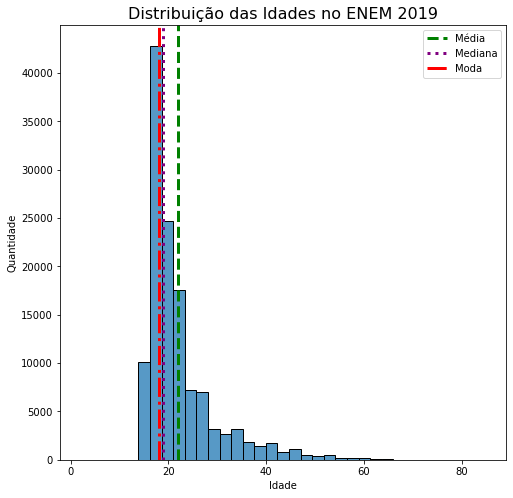
A partir do grafico acima, é visível que a concentração de dados está por volta dos candidatos entre 17 e 24 anos.
idades_enem_2019.describe()count 127380.000000
mean 22.067051
std 7.433180
min 2.000000
25% 18.000000
50% 19.000000
75% 24.000000
max 85.000000
Name: NU_IDADE, dtype: float64- A média de idade, na amostra, é de aproximadamente 22 anos.
- A mediana é de 19 anos.
- É possível visualizar que, apesar da idade máxima ser 85 anos, o terceiro quartil está em 24 anos de idade, sendo assim, ao menos 76% dos candidados tinham 24 anos ou menos.
- Conclui-se que as idades NÃO estão normalmente distribuídas.
Encontrando a média de idade por município
Vamos ver qual(quais) o Município com a média mais alta:
media_idade_municipio = pd.DataFrame(dados_enem2019.groupby(['NO_MUNICIPIO_RESIDENCIA']).mean()['NU_IDADE'])
media_idade_municipio.loc[media_idade_municipio['NU_IDADE'] == media_idade_municipio['NU_IDADE'].max()]| NU_IDADE | |
|---|---|
| NO_MUNICIPIO_RESIDENCIA | |
| Maria Helena | 55.0 |
Vamos ver qual(quais) o Município com a média mais baixa:
media_idade_municipio.loc[media_idade_municipio['NU_IDADE'] == media_idade_municipio['NU_IDADE'].min()] | NU_IDADE | |
|---|---|
| NO_MUNICIPIO_RESIDENCIA | |
| Abreulândia | 15.0 |
| Diamante do Sul | 15.0 |
| Fagundes Varela | 15.0 |
| Flor do Sertão | 15.0 |
| Gouvelândia | 15.0 |
| Itaipava do Grajaú | 15.0 |
| Jaborá | 15.0 |
| Lajeado Grande | 15.0 |
| Mansidão | 15.0 |
| Neves Paulista | 15.0 |
| Nova Crixás | 15.0 |
| Rio Branco do Ivaí | 15.0 |
| Rio Sono | 15.0 |
| Santa Rita do Novo Destino | 15.0 |
| Tejupá | 15.0 |
Por fim, deixando a curiosidade de lado (UAU MÉDIA DE 15 ANOS), vamos criar um dataframe com o Nome do Município e a Média de Idade respectiva.
municipio_idade = media_idade_municipio.index
media_idade_municipio['Cidade'] = municipio_idade
media_idade_municipio.head()| NU_IDADE | Cidade | |
|---|---|---|
| NO_MUNICIPIO_RESIDENCIA | ||
| Abadia de Goiás | 21.200000 | Abadia de Goiás |
| Abadia dos Dourados | 17.000000 | Abadia dos Dourados |
| Abadiânia | 17.600000 | Abadiânia |
| Abaetetuba | 23.023669 | Abaetetuba |
| Abaeté | 21.136364 | Abaeté |
Abaixo, iremos importar um Dataset que analisa a longitude e a latidude de cada município a fim de gerar um gráfico cartográfico com as médias de idade! Fica lindo, né!?
site = 'https://github.com/kelvins/Municipios-Brasileiros/blob/main/csv/municipios.csv?raw=true'
coordenadas = pd.read_csv(site)
concatenado_idade = pd.merge(media_idade_municipio, coordenadas, how = 'left', left_on=['Cidade'], right_on = ['nome'])
concatenado_idade.plot.scatter(y='latitude', x = 'longitude',
c = concatenado_idade['NU_IDADE'],
cmap = 'PiYG',
figsize = (12,10)).set_title('Média de Idade ENEM 2019 por Município', fontsize = 16)
ax = plt.gca()
ax.set_facecolor('linen')
plt.show();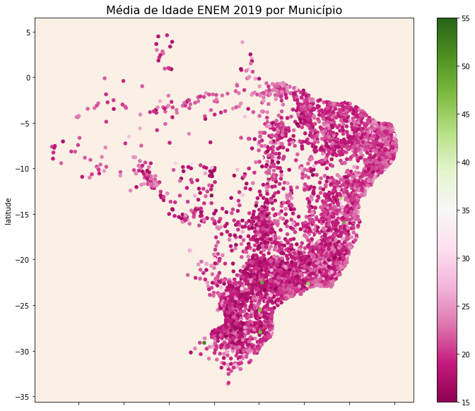
No gráfico acima, a região mais escura (de acordo com a escala) tende à região Sul/Sudeste. Em contrapartida, o Nordeste apresenta levemente uma cor mais clara que esta. Isso ressalta que as regiões mais ao Sul, Sudeste e Nordeste do País apresentam idades mais novas em candidatos no ENEM 2019.
Hipótese: Possível política de incentivo à alunos de 1º e 2º Ano do Ensino Médio e até mesmo o Ensino Fundamental.
Qual estado predomina com candidatos mais novos?
Para responder a esta pergunta, vamos pegar a quantidade de candidatos menores de 18 anos em nossos dados e pegar o percentual por estado.
menores_idade_enem2019 = dados_enem2019.query('NU_IDADE < 18')
percentual_menores_idade_enem2019 = pd.DataFrame(menores_idade_enem2019['SG_UF_RESIDENCIA'].value_counts(normalize = True)*100)
plt.figure(figsize=(15, 5))
ax = sns.barplot(x=percentual_menores_idade_enem2019.index, y = percentual_menores_idade_enem2019['SG_UF_RESIDENCIA'], data=percentual_menores_idade_enem2019).set_title('Candidatos Menores de 18 anos por Estado (%)', fontsize = 16);
plt.ylabel("Percentual de Alunos por Estado");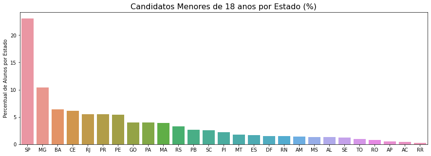
Conclusão: O Estado com candidatos mais jovens foi o de São Paulo. Em sequência, segue o estado de Minas Gerais. Esse atributo pode reforçar o mapa anterior proposto, demonstrando o escurecimento na região Sudeste.
O comportamento das notas no Estado do Ceará de acordo com o IDH
Bem, chegando neste tópico, você poderia se perguntar: ‘Porque analisar o Estado do Ceará?’. Bem, é um Estado muito bom! <3
Escolhemos ele (além de 2 dos 3 integrantes morarem em Fortaleza) para ver como o IDH impacta nas notas. Uma análise de todos os municípios iria requerer mais tabelas de dados e o nosso foco não será utilizar dados externos para prever o modelo, mas sim os fornecidos pelo INEP, logo: Bateu curiosidade para ver Notas x IDH, então vamos lá!
Importaremos os dados referente ao estado do Ceará para cada município a fim de coletar algumas informações. Os dados foram obtidos do próprio site do IBGE.
Referência: https://www.ibge.gov.br/cidades-e-estados/ce.html
Importando os dados
dados_ce = pd.read_excel('CE_dados.xlsx')
ce_dados = dados_enem2019.loc[dados_enem2019['SG_UF_RESIDENCIA'] == 'CE'][['NU_NOTA_CN', 'NU_NOTA_CH', 'NU_NOTA_MT', 'NU_NOTA_LC', 'SG_UF_RESIDENCIA', 'NO_MUNICIPIO_RESIDENCIA']].dropna(subset=['NU_NOTA_MT', 'NU_NOTA_CN', 'NU_NOTA_LC', 'NU_NOTA_CH'])
dados_ce.head()| Município | Código | Gentílico | Prefeito [2017] | Área Territorial - km² [2019] | População estimada - pessoas [2020] | Densidade demográfica - hab/km² [2010] | Escolarização <span>6 a 14 anos</span> - % [2010] | IDHM | Mortalidade infantil - óbitos por mil nascidos vivos [2017] | Receitas realizadas - R$ (×1000) [2017] | Despesas empenhadas - R$ (×1000) [2017] | PIB per capita - R$ [2017] | |
|---|---|---|---|---|---|---|---|---|---|---|---|---|---|
| 0 | Abaiara | 2300101.0 | abaiarense | AFONSO TAVARES LEITE | 180.833 | 11853.0 | 58.69 | 96.7 | 0.628 | 33.33 | 29043.96353 | 26827.90366 | 8009.04 |
| 1 | Acarape | 2300150.0 | acarapense | FRANKLIN VERISSIMO OLIVEIRA | 130.002 | 15036.0 | 98.52 | 96.8 | 0.606 | 14.56 | 38762.53540 | 36800.46805 | 9069.38 |
| 2 | Acaraú | 2300200.0 | acarauense | ALEXANDRE FERREIRA GOMES DA SILVEIRA | 842.471 | 63104.0 | 68.31 | 96.8 | 0.601 | 8.81 | 132656.38793 | 116962.81301 | 10192.64 |
| 3 | Acopiara | 2300309.0 | acopiarense | ANTONIO ALMEIDA NETO | 2254.279 | 54481.0 | 22.58 | 97.2 | 0.595 | 19.54 | 153148.70946 | 125356.16693 | 7405.32 |
| 4 | Aiuaba | 2300408.0 | aiuabense | RAMILSON ARAUJO MORAES | 2438.563 | 17493.0 | 6.66 | 97.5 | 0.569 | 10.87 | 37794.63071 | 33776.93227 | 6087.34 |
Mensclando as bases de dado por Município para facilitar a manipulação
nota_media_ce = ce_dados.groupby(['NO_MUNICIPIO_RESIDENCIA']).mean()[['NU_NOTA_CN', 'NU_NOTA_CH', 'NU_NOTA_MT', 'NU_NOTA_LC']]
nota_media_ce['Municipio'] = nota_media_ce.index
nota_media_ce.head()| NU_NOTA_CN | NU_NOTA_CH | NU_NOTA_MT | NU_NOTA_LC | Municipio | |
|---|---|---|---|---|---|
| NO_MUNICIPIO_RESIDENCIA | |||||
| Abaiara | 429.937500 | 469.000000 | 490.337500 | 478.537500 | Abaiara |
| Acarape | 437.394737 | 462.157895 | 496.789474 | 475.042105 | Acarape |
| Acaraú | 449.180000 | 446.620000 | 501.684000 | 492.792000 | Acaraú |
| Acopiara | 443.053333 | 481.693333 | 467.543333 | 499.253333 | Acopiara |
| Aiuaba | 420.233333 | 442.266667 | 457.250000 | 465.983333 | Aiuaba |
Plotando os Gráficos de Dispersão
concatenado_ce = pd.merge(nota_media_ce, dados_ce, how = 'left', left_on=['Municipio'], right_on = ['Município'])
idh_medias_ce = concatenado_ce[['Municipio', 'NU_NOTA_CN', 'NU_NOTA_CH', 'NU_NOTA_MT', 'NU_NOTA_LC', 'IDHM']]
plt.figure(figsize=(15,8))
plt.subplot(2,2,1)
plt.title('Relação entre IDH do Município e a Média em Ciências da Natureza')
plt.scatter(data =idh_medias_ce, y ='NU_NOTA_CN', x ='IDHM');
plt.subplot(2,2,2)
plt.title('Relação entre IDH do Município e a Média em Ciências Humanas')
plt.scatter(data =idh_medias_ce, y ='NU_NOTA_CH', x ='IDHM');
plt.subplot(2,2,3)
plt.title('Relação entre IDH do Município e a Média em Matemática')
plt.scatter(data =idh_medias_ce, y ='NU_NOTA_MT', x ='IDHM');
plt.subplot(2,2,4)
plt.title('Relação entre IDH do Município e a Média em Linguagens e Códigos')
plt.scatter(data =idh_medias_ce, y ='NU_NOTA_LC', x ='IDHM');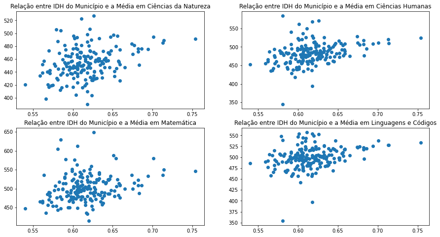
Visualmente os dados se dispersam muito em relação ao IDH do município.
correlacao_ce = idh_medias_ce[['NU_NOTA_CN', 'NU_NOTA_CH', 'NU_NOTA_MT', 'NU_NOTA_LC', 'IDHM']].corr()
sns.heatmap(correlacao_ce, cmap="Blues", center=0, annot=True);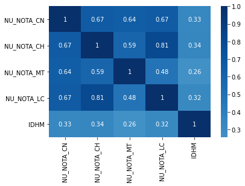
Conclusão: De fato, há uma fraca relação entre o IDH e as provas. As que mais se destacaram pela relação foram Ciências Humanas e Ciências da Natureza. Apesar de haver uma correlação fraca (não se é esperada uma correlação forte, dito que é apenas um evento de muitos) o IDH tem sim sua influência nas notas do ENEM.
Esse fator é visível a partir dos gráficos, onde há uma mínima inclinação positiva da esquerda para direita, em que quanto maior o IDH maior serão as notas.
O critério de análise seguiu a Correlação de Pearson: 
Influência da Renda Familiar tem sobre as Notas
Como as rendas influenciam diretamente nas notas?
Para responder isso, vamos trabalhar com a coluna Q006, que é referente à questão sobre renda familiar, uma variável Categórica. Para analisá-la, bolamos alguns métodos que irão facilitar a visualização dos dados e respectivas interpretações. Segura na cadeira que LÁ VEM CÓDIGO!
Na célula abaixo, criamos um novo dataframe com as respostas (de A a Q) do questionário e o que elas representam.
rendas = {
'A': 'Nenhuma renda.',
'B': 'Até R$ 998,00.',
'C' : 'De R$ 998,01 até R$ 1.497,00.',
'D' : 'De R$ 1.497,01 até R$ 1.996,00.',
'E' : 'De R$ 1.996,01 até R$ 2.495,00.',
'F': 'De R$ 2.495,01 até R$ 2.994,00.',
'G' :'De R$ 2.994,01 até R$ 3.992,00.',
'H' : 'De R$ 3.992,01 até R$ 4.990,00.',
'I' : 'De R$ 4.990,01 até R$ 5.988,00.',
'J' : 'De R$ 5.988,01 até R$ 6.986,00.',
'K' : 'De R$ 6.986,01 até R$ 7.984,00.',
'L' : 'De R$ 7.984,01 até R$ 8.982,00.',
'M' :'De R$ 8.982,01 até R$ 9.980,00.',
'N' : 'De R$ 9.980,01 até R$ 11.976,00.',
'O' : 'De R$ 11.976,01 até R$ 14.970,00.',
'P' : 'De R$ 14.970,01 até R$ 19.960,00.',
'Q' :'Mais de R$ 19.960,00.'
}
df_renda= dados_enem2019.copy().reset_index(drop=True)
df_renda['Q006_RESPOSTA'] = [rendas[resposta] for resposta in df_renda['Q006']]
df_renda[['Q006', 'Q006_RESPOSTA']]| Q006 | Q006_RESPOSTA | |
|---|---|---|
| 0 | C | De R$ 998,01 até R$ 1.497,00. |
| 1 | C | De R$ 998,01 até R$ 1.497,00. |
| 2 | A | Nenhuma renda. |
| 3 | C | De R$ 998,01 até R$ 1.497,00. |
| 4 | B | Até R$ 998,00. |
| ... | ... | ... |
| 127375 | C | De R$ 998,01 até R$ 1.497,00. |
| 127376 | A | Nenhuma renda. |
| 127377 | C | De R$ 998,01 até R$ 1.497,00. |
| 127378 | E | De R$ 1.996,01 até R$ 2.495,00. |
| 127379 | B | Até R$ 998,00. |
127380 rows × 2 columns
Abaixo, apenas um método simples e rápido para transformar nosso dicionário acima em uma lista amigável e fofinha ;)
renda_ordenada = pd.DataFrame([rendas])
renda_ordenada = list(renda_ordenada.T[0])
renda_ordenada['Nenhuma renda.',
'Até R$ 998,00.',
'De R$ 998,01 até R$ 1.497,00.',
'De R$ 1.497,01 até R$ 1.996,00.',
'De R$ 1.996,01 até R$ 2.495,00.',
'De R$ 2.495,01 até R$ 2.994,00.',
'De R$ 2.994,01 até R$ 3.992,00.',
'De R$ 3.992,01 até R$ 4.990,00.',
'De R$ 4.990,01 até R$ 5.988,00.',
'De R$ 5.988,01 até R$ 6.986,00.',
'De R$ 6.986,01 até R$ 7.984,00.',
'De R$ 7.984,01 até R$ 8.982,00.',
'De R$ 8.982,01 até R$ 9.980,00.',
'De R$ 9.980,01 até R$ 11.976,00.',
'De R$ 11.976,01 até R$ 14.970,00.',
'De R$ 14.970,01 até R$ 19.960,00.',
'Mais de R$ 19.960,00.']ATENÇÃO! Utilizaremos Boxplot para realizar nossa análise daqui em diante! Portanto, é DE SUMA IMPORTÂNCIA que VOCÊ(SIM, VOCÊ) entenda como interpretá-lo. Como somos legais, segue a fonte de onde você pode ver com mais detalhes essa função.
Mas… a gente é legal, e vai pedir para que você foque na linhazinha que representa a mediana(ou Segundo quartil, para os íntimos), viu?!

Fonte: https://dev.to/giselyalves13/visualizacao-de-dados-com-seaborn-2892
Agora, plotaremos o famoso boxplot para cada matéria com todos os dados da função describe, que são: Mínimo, Máximo, 1º, 2º e 3º quartis, e média, para termos uma visualização ampliada da a relação que a renda tem sobre as notas.
Se liga só que mão na roda para você! Abaixo, escolha qual matéria deseja ver:
materias = {'Ciências da Natureza':'NU_NOTA_CN',
'Ciências Humanas':'NU_NOTA_CH',
'Matemática':'NU_NOTA_MT',
'Linguagens e Códigos':'NU_NOTA_LC'}
def f(materia):
plt.figure(figsize=(10, 8))
sns.boxplot(x=materias[materia], y = "Q006_RESPOSTA", data = df_renda, order = renda_ordenada)
plt.title(f"Boxplot das Notas de {materia} pela Renda", fontsize = 16);
plt.xlabel("Nota")
plt.ylabel("Renda")
interact(f, materia=materias.keys());Conclusão: Quanto maior a renda do candidato, melhor será seu desempenho. Isto é nítido nos Boxplots acima, em que quase todos os gráficos, a nota máxima de quem tem renda maior que 19.960 reais é maior que a nota do maior outlier (você leu sobre o boxplot, né?) de quem não tem nenhuma renda. Há de se observar o segundo quartil, ou a mediana, para cada nível de renda. De fato, há uma disparidade considerável e significativa em relação aos níveis.
Infelizmente, os gráficos demonstram a desigualdade social estruturada no país, onde o acesso à informação e aos materiais é garantido àqueles que tem renda suficiente para suprir uma qualidade de ensino adequada e satisfatória.
Há diferença significativa nas notas para cada renda? Testes Estatísticos: ANOVA e Teste de Tukey
Análise de Variância é a técnica estatística que permite avaliar afirmações sobre as médias de populações. A análise visa, fundamentalmente, verificar se existe uma diferença significativa entre as médias e se os fatores exercem influência em alguma variável dependente.
Método: Modelo de ANOVA para realizar o teste se há diferença significativa entre as rendas.
Uso: Para identificar, basta que o PR(>F) seja menor que 0,05 (Nível de Confiança de 95%) para contestar que há.
Hipótese Nula: Não há diferença significativa entre os grupos.
Fonte: https://pt.wikipedia.org/wiki/An%C3%A1lise_de_vari%C3%A2ncia
Entendendo o Teste de Tukey

- Reject: Matriz de Booleano. Verdadeiro se rejeitarmos nulo para o par de grupo
- Meandiffs: Diferenças médias de pares
Entendeu nada, né? Deixa quieto, a gente já te explica na prática! Mas se tiver curioso, vê o segundo link abaixo! É bem legal e explica como funciona!
Fontes:
https://towardsdatascience.com/anova-tukey-test-in-python-b3082b6e6bda
http://www.portalaction.com.br/anova/31-teste-de-tukey
Eliminando os valores NaN para tornar o modelo visível e saudável
teste_renda = df_renda.dropna(subset=['NU_NOTA_MT', 'NU_NOTA_CN', 'NU_NOTA_LC', 'NU_NOTA_CH']) Bem, agora o negócio começa a complicar… Estatística na veia aqui! Mas não se preocupa, viu? Para cada matéria, faremos AS MESMAS ANÁLISES, portanto, iremos explicar apenas o passo-a-passo em Matemática, e o resto é a mesma coisa, viu? As conclusões podem mudar, claro. APERTA O CINTO, E VAMOS LÁ!
Matemática
Iremos fazer aqui o uso da biblioteca Statsmodel massivamente! Olha que legal:
Abaixo, utilizaremos a função statsmodels.formula.api.ols. Segue Documentação
Tá, e qual o motivo? Bem, não iremos utilizar ela para análise, uma vez que temos múltiplos targets. Ela irá APENAS PREPARAR nossos dados para utilizarmos a próxima (e incrível) função: statsmodels.stats.anova.anova_lm. Segue Documentação
Iremos apenas criar um output com a função summary para ver se está tudo certinho! Não se preocupa com isso não, viu?
…
modelo1 = ols('NU_NOTA_MT ~ Q006_RESPOSTA', teste_renda).fit()
modelo1.summary()| Dep. Variable: | NU_NOTA_MT | R-squared: | 0.223 |
| Model: | OLS | Adj. R-squared: | 0.222 |
| Method: | Least Squares | F-statistic: | 1655. |
| Date: | Tue, 24 Nov 2020 | Prob (F-statistic): | 0.00 |
| Time: | 15:17:23 | Log-Likelihood: | -5.5351e+05 |
| No. Observations: | 92481 | AIC: | 1.107e+06 |
| Df Residuals: | 92464 | BIC: | 1.107e+06 |
| Df Model: | 16 | ||
| Covariance Type: | nonrobust |
| coef | std err | t | P>|t| | [0.025 | 0.975] | |
| Intercept | 475.6747 | 0.642 | 740.750 | 0.000 | 474.416 | 476.933 |
| Q006_RESPOSTA[T.De R$ 1.497,01 até R$ 1.996,00.] | 46.8641 | 1.202 | 38.977 | 0.000 | 44.508 | 49.221 |
| Q006_RESPOSTA[T.De R$ 1.996,01 até R$ 2.495,00.] | 53.3809 | 1.216 | 43.903 | 0.000 | 50.998 | 55.764 |
| Q006_RESPOSTA[T.De R$ 11.976,01 até R$ 14.970,00.] | 172.9704 | 3.100 | 55.799 | 0.000 | 166.895 | 179.046 |
| Q006_RESPOSTA[T.De R$ 14.970,01 até R$ 19.960,00.] | 191.7574 | 3.253 | 58.955 | 0.000 | 185.382 | 198.133 |
| Q006_RESPOSTA[T.De R$ 2.495,01 até R$ 2.994,00.] | 77.8305 | 1.611 | 48.325 | 0.000 | 74.674 | 80.987 |
| Q006_RESPOSTA[T.De R$ 2.994,01 até R$ 3.992,00.] | 87.1851 | 1.412 | 61.756 | 0.000 | 84.418 | 89.952 |
| Q006_RESPOSTA[T.De R$ 3.992,01 até R$ 4.990,00.] | 106.6868 | 1.688 | 63.192 | 0.000 | 103.378 | 109.996 |
| Q006_RESPOSTA[T.De R$ 4.990,01 até R$ 5.988,00.] | 117.9256 | 1.872 | 62.992 | 0.000 | 114.256 | 121.595 |
| Q006_RESPOSTA[T.De R$ 5.988,01 até R$ 6.986,00.] | 129.9553 | 2.451 | 53.027 | 0.000 | 125.152 | 134.759 |
| Q006_RESPOSTA[T.De R$ 6.986,01 até R$ 7.984,00.] | 140.9850 | 2.809 | 50.186 | 0.000 | 135.479 | 146.491 |
| Q006_RESPOSTA[T.De R$ 7.984,01 até R$ 8.982,00.] | 152.2369 | 3.220 | 47.271 | 0.000 | 145.925 | 158.549 |
| Q006_RESPOSTA[T.De R$ 8.982,01 até R$ 9.980,00.] | 155.4639 | 3.282 | 47.365 | 0.000 | 149.031 | 161.897 |
| Q006_RESPOSTA[T.De R$ 9.980,01 até R$ 11.976,00.] | 168.8936 | 2.800 | 60.328 | 0.000 | 163.406 | 174.381 |
| Q006_RESPOSTA[T.De R$ 998,01 até R$ 1.497,00.] | 21.2898 | 0.907 | 23.465 | 0.000 | 19.512 | 23.068 |
| Q006_RESPOSTA[T.Mais de R$ 19.960,00.] | 202.3794 | 2.844 | 71.151 | 0.000 | 196.804 | 207.954 |
| Q006_RESPOSTA[T.Nenhuma renda.] | -9.1324 | 1.663 | -5.490 | 0.000 | -12.393 | -5.872 |
| Omnibus: | 2697.240 | Durbin-Watson: | 1.954 |
| Prob(Omnibus): | 0.000 | Jarque-Bera (JB): | 2937.891 |
| Skew: | 0.432 | Prob(JB): | 0.00 |
| Kurtosis: | 3.119 | Cond. No. | 12.3 |
Notes:
[1] Standard Errors assume that the covariance matrix of the errors is correctly specified.
Estamos apenas brincando. Aqui é coisa séria e VAMOS SIM ANALISAR ESSE OUTPUT. Olha a coluna P>|t| para cada rótulo de renda. Lembra? Regra geral: Se valor-p < \(\alpha\), então rejeitase a hipótese nula. Mas opa, temos aqui vários rótulos, por isso, iremos usar o modelo de ANOVA.
Vamos agora rever nossas hipóteses:
\(\qquad H_0:\) $ _i = 0$
\(\qquad H_1:\) $ _i $
E nosso $=$5%
Vamos seguir agora para o uso do Modelo ANOVA.
resultados1 = sm.stats.anova_lm(modelo1)
resultados1| df | sum_sq | mean_sq | F | PR(>F) | |
|---|---|---|---|---|---|
| Q006_RESPOSTA | 16.0 | 2.449500e+08 | 1.530938e+07 | 1654.688227 | 0.0 |
| Residual | 92464.0 | 8.554882e+08 | 9.252122e+03 | NaN | NaN |
Rejeitar a hipótese nula. O resultado demonstra que sim, há diferença significativa entre os grupos nas notas de matemática. (afirmando o argumento da seção acima).
Ah, lembra do Teste de Tukey? Vamos usar ele agora!
Observe que no output a seguir, teremos FWER=0.05. Isto representa o nosso \(\alpha\)!
mc = MultiComparison(teste_renda['NU_NOTA_MT'], teste_renda['Q006'])
resultado_teste1 = mc.tukeyhsd()
resultado_teste1.summary()| group1 | group2 | meandiff | p-adj | lower | upper | reject |
| A | B | 9.1324 | 0.001 | 3.3789 | 14.8859 | True |
| A | C | 30.4222 | 0.001 | 24.6703 | 36.1741 | True |
| A | D | 55.9966 | 0.001 | 49.6302 | 62.3629 | True |
| A | E | 62.5133 | 0.001 | 56.1163 | 68.9104 | True |
| A | F | 86.9629 | 0.001 | 79.5963 | 94.3295 | True |
| A | G | 96.3176 | 0.001 | 89.4561 | 103.179 | True |
| A | H | 115.8192 | 0.001 | 108.2473 | 123.3911 | True |
| A | I | 127.058 | 0.001 | 118.9857 | 135.1303 | True |
| A | J | 139.0878 | 0.001 | 129.3366 | 148.839 | True |
| A | K | 150.1174 | 0.001 | 139.2711 | 160.9638 | True |
| A | L | 161.3693 | 0.001 | 149.2323 | 173.5063 | True |
| A | M | 164.5963 | 0.001 | 152.263 | 176.9296 | True |
| A | N | 178.0261 | 0.001 | 167.2095 | 188.8426 | True |
| A | O | 182.1028 | 0.001 | 170.3474 | 193.8582 | True |
| A | P | 200.8899 | 0.001 | 188.6508 | 213.1289 | True |
| A | Q | 211.5119 | 0.001 | 200.5565 | 222.4672 | True |
| B | C | 21.2898 | 0.001 | 18.1517 | 24.4278 | True |
| B | D | 46.8641 | 0.001 | 42.7055 | 51.0227 | True |
| B | E | 53.3809 | 0.001 | 49.1755 | 57.5863 | True |
| B | F | 77.8305 | 0.001 | 72.26 | 83.4009 | True |
| B | G | 87.1851 | 0.001 | 82.3022 | 92.068 | True |
| B | H | 106.6868 | 0.001 | 100.8475 | 112.5261 | True |
| B | I | 117.9256 | 0.001 | 111.4507 | 124.4005 | True |
| B | J | 129.9553 | 0.001 | 121.479 | 138.4317 | True |
| B | K | 140.985 | 0.001 | 131.2687 | 150.7013 | True |
| B | L | 152.2369 | 0.001 | 141.0982 | 163.3756 | True |
| B | M | 155.4639 | 0.001 | 144.1116 | 166.8161 | True |
| B | N | 168.8936 | 0.001 | 159.2106 | 178.5766 | True |
| B | O | 172.9704 | 0.001 | 162.2488 | 183.6919 | True |
| B | P | 191.7574 | 0.001 | 180.5076 | 203.0072 | True |
| B | Q | 202.3794 | 0.001 | 192.5416 | 212.2173 | True |
| C | D | 25.5743 | 0.001 | 21.418 | 29.7307 | True |
| C | E | 32.0911 | 0.001 | 27.8879 | 36.2943 | True |
| C | F | 56.5407 | 0.001 | 50.9718 | 62.1095 | True |
| C | G | 65.8953 | 0.001 | 61.0143 | 70.7763 | True |
| C | H | 85.397 | 0.001 | 79.5593 | 91.2347 | True |
| C | I | 96.6358 | 0.001 | 90.1623 | 103.1093 | True |
| C | J | 108.6655 | 0.001 | 100.1903 | 117.1408 | True |
| C | K | 119.6952 | 0.001 | 109.9798 | 129.4106 | True |
| C | L | 130.9471 | 0.001 | 119.8092 | 142.0849 | True |
| C | M | 134.1741 | 0.001 | 122.8226 | 145.5255 | True |
| C | N | 147.6038 | 0.001 | 137.9218 | 157.2859 | True |
| C | O | 151.6806 | 0.001 | 140.9599 | 162.4013 | True |
| C | P | 170.4676 | 0.001 | 159.2186 | 181.7166 | True |
| C | Q | 181.0897 | 0.001 | 171.2528 | 190.9265 | True |
| D | E | 6.5168 | 0.001 | 1.5054 | 11.5281 | True |
| D | F | 30.9663 | 0.001 | 24.7649 | 37.1678 | True |
| D | G | 40.321 | 0.001 | 34.729 | 45.913 | True |
| D | H | 59.8226 | 0.001 | 53.3786 | 66.2667 | True |
| D | I | 71.0615 | 0.001 | 64.0363 | 78.0866 | True |
| D | J | 83.0912 | 0.001 | 74.1875 | 91.995 | True |
| D | K | 94.1209 | 0.001 | 84.0296 | 104.2122 | True |
| D | L | 105.3727 | 0.001 | 93.9055 | 116.84 | True |
| D | M | 108.5997 | 0.001 | 96.9249 | 120.2746 | True |
| D | N | 122.0295 | 0.001 | 111.9703 | 132.0888 | True |
| D | O | 126.1063 | 0.001 | 115.0437 | 137.1688 | True |
| D | P | 144.8933 | 0.001 | 133.3181 | 156.4686 | True |
| D | Q | 155.5153 | 0.001 | 145.307 | 165.7237 | True |
| E | F | 24.4496 | 0.001 | 18.2166 | 30.6825 | True |
| E | G | 33.8042 | 0.001 | 28.1773 | 39.4312 | True |
| E | H | 53.3059 | 0.001 | 46.8315 | 59.7802 | True |
| E | I | 64.5447 | 0.001 | 57.4917 | 71.5976 | True |
| E | J | 76.5744 | 0.001 | 67.6487 | 85.5002 | True |
| E | K | 87.6041 | 0.001 | 77.4934 | 97.7148 | True |
| E | L | 98.856 | 0.001 | 87.3716 | 110.3403 | True |
| E | M | 102.083 | 0.001 | 90.3914 | 113.7746 | True |
| E | N | 115.5128 | 0.001 | 105.4341 | 125.5914 | True |
| E | O | 119.5895 | 0.001 | 108.5093 | 130.6697 | True |
| E | P | 138.3765 | 0.001 | 126.7844 | 149.9687 | True |
| E | Q | 148.9986 | 0.001 | 138.771 | 159.2261 | True |
| F | G | 9.3547 | 0.001 | 2.6459 | 16.0634 | True |
| F | H | 28.8563 | 0.001 | 21.4225 | 36.2901 | True |
| F | I | 40.0951 | 0.001 | 32.1523 | 48.038 | True |
| F | J | 52.1249 | 0.001 | 42.4805 | 61.7692 | True |
| F | K | 63.1545 | 0.001 | 52.4041 | 73.9049 | True |
| F | L | 74.4064 | 0.001 | 62.355 | 86.4578 | True |
| F | M | 77.6334 | 0.001 | 65.3844 | 89.8824 | True |
| F | N | 91.0632 | 0.001 | 80.3429 | 101.7835 | True |
| F | O | 95.1399 | 0.001 | 83.473 | 106.8068 | True |
| F | P | 113.927 | 0.001 | 101.7728 | 126.0811 | True |
| F | Q | 124.549 | 0.001 | 113.6886 | 135.4093 | True |
| G | H | 19.5016 | 0.001 | 12.5681 | 26.4352 | True |
| G | I | 30.7405 | 0.001 | 23.2637 | 38.2172 | True |
| G | J | 42.7702 | 0.001 | 33.506 | 52.0344 | True |
| G | K | 53.7999 | 0.001 | 43.3891 | 64.2106 | True |
| G | L | 65.0517 | 0.001 | 53.3024 | 76.8011 | True |
| G | M | 68.2787 | 0.001 | 56.3267 | 80.2307 | True |
| G | N | 81.7085 | 0.001 | 71.3289 | 92.0882 | True |
| G | O | 85.7852 | 0.001 | 74.4306 | 97.1399 | True |
| G | P | 104.5723 | 0.001 | 92.7176 | 116.4271 | True |
| G | Q | 115.1943 | 0.001 | 104.6701 | 125.7186 | True |
| H | I | 11.2388 | 0.001 | 3.1052 | 19.3725 | True |
| H | J | 23.2686 | 0.001 | 13.4665 | 33.0706 | True |
| H | K | 34.2982 | 0.001 | 23.4061 | 45.1904 | True |
| H | L | 45.5501 | 0.001 | 33.3722 | 57.728 | True |
| H | M | 48.7771 | 0.001 | 36.4035 | 61.1507 | True |
| H | N | 62.2069 | 0.001 | 51.3445 | 73.0693 | True |
| H | O | 66.2836 | 0.001 | 54.486 | 78.0812 | True |
| H | P | 85.0707 | 0.001 | 72.791 | 97.3503 | True |
| H | Q | 95.6927 | 0.001 | 84.692 | 106.6933 | True |
| I | J | 12.0298 | 0.0052 | 1.8362 | 22.2233 | True |
| I | K | 23.0594 | 0.001 | 11.8137 | 34.3051 | True |
| I | L | 34.3113 | 0.001 | 21.8161 | 46.8065 | True |
| I | M | 37.5383 | 0.001 | 24.8524 | 50.2242 | True |
| I | N | 50.9681 | 0.001 | 39.7512 | 62.185 | True |
| I | O | 55.0448 | 0.001 | 42.92 | 67.1696 | True |
| I | P | 73.8319 | 0.001 | 61.2375 | 86.4262 | True |
| I | Q | 84.4539 | 0.001 | 73.103 | 95.8047 | True |
| J | K | 11.0297 | 0.1627 | -1.4759 | 23.5353 | False |
| J | L | 22.2815 | 0.001 | 8.6414 | 35.9217 | True |
| J | M | 25.5085 | 0.001 | 11.6934 | 39.3236 | True |
| J | N | 38.9383 | 0.001 | 26.4586 | 51.418 | True |
| J | O | 43.015 | 0.001 | 29.7134 | 56.3167 | True |
| J | P | 61.8021 | 0.001 | 48.0711 | 75.5331 | True |
| J | Q | 72.4241 | 0.001 | 59.8239 | 85.0244 | True |
| K | L | 11.2519 | 0.3614 | -3.1915 | 25.6952 | False |
| K | M | 14.4789 | 0.0553 | -0.1298 | 29.0876 | False |
| K | N | 27.9086 | 0.001 | 14.5557 | 41.2616 | True |
| K | O | 31.9854 | 0.001 | 17.8612 | 46.1096 | True |
| K | P | 50.7724 | 0.001 | 36.2432 | 65.3017 | True |
| K | Q | 61.3944 | 0.001 | 47.9288 | 74.8601 | True |
| L | M | 3.227 | 0.9 | -12.364 | 18.818 | False |
| L | N | 16.6568 | 0.0073 | 2.2358 | 31.0778 | True |
| L | O | 20.7335 | 0.001 | 5.5956 | 35.8714 | True |
| L | P | 39.5206 | 0.001 | 24.004 | 55.0371 | True |
| L | Q | 50.1426 | 0.001 | 35.6172 | 64.668 | True |
| M | N | 13.4298 | 0.1142 | -1.1568 | 28.0164 | False |
| M | O | 17.5065 | 0.0084 | 2.2108 | 32.8022 | True |
| M | P | 36.2936 | 0.001 | 20.623 | 51.9641 | True |
| M | Q | 46.9156 | 0.001 | 32.2258 | 61.6054 | True |
| N | O | 4.0767 | 0.9 | -10.0246 | 18.178 | False |
| N | P | 22.8638 | 0.001 | 8.3568 | 37.3708 | True |
| N | Q | 33.4858 | 0.001 | 20.0442 | 46.9274 | True |
| O | P | 18.7871 | 0.0024 | 3.5672 | 34.0069 | True |
| O | Q | 29.4091 | 0.001 | 15.201 | 43.6171 | True |
| P | Q | 10.622 | 0.492 | -3.9888 | 25.2328 | False |
Em alguns casos não há diferença significativa na Nota de Matemática. São as rendas: J e K, K e L, K e M, L e M, M e N, N e O, P e Q.
Ao passo que as categorias vão aumentando, maior será a combinação entre elas. De fato, são muitas rendas que, se comparadas entre si, possuem uma diferença significativa. Entretanto, as aqui listadas não possuem nenhuma diferença significativa se comparadas entre si.
Ciências da Natureza
modelo2 = ols('NU_NOTA_CN ~ Q006_RESPOSTA', teste_renda).fit()
modelo2.summary()| Dep. Variable: | NU_NOTA_CN | R-squared: | 0.188 |
| Model: | OLS | Adj. R-squared: | 0.187 |
| Method: | Least Squares | F-statistic: | 1334. |
| Date: | Tue, 24 Nov 2020 | Prob (F-statistic): | 0.00 |
| Time: | 15:21:40 | Log-Likelihood: | -5.2203e+05 |
| No. Observations: | 92481 | AIC: | 1.044e+06 |
| Df Residuals: | 92464 | BIC: | 1.044e+06 |
| Df Model: | 16 | ||
| Covariance Type: | nonrobust |
| coef | std err | t | P>|t| | [0.025 | 0.975] | |
| Intercept | 445.1179 | 0.457 | 974.253 | 0.000 | 444.222 | 446.013 |
| Q006_RESPOSTA[T.De R$ 1.497,01 até R$ 1.996,00.] | 32.6479 | 0.855 | 38.164 | 0.000 | 30.971 | 34.325 |
| Q006_RESPOSTA[T.De R$ 1.996,01 até R$ 2.495,00.] | 37.3362 | 0.865 | 43.159 | 0.000 | 35.641 | 39.032 |
| Q006_RESPOSTA[T.De R$ 11.976,01 até R$ 14.970,00.] | 110.5242 | 2.206 | 50.113 | 0.000 | 106.201 | 114.847 |
| Q006_RESPOSTA[T.De R$ 14.970,01 até R$ 19.960,00.] | 119.4403 | 2.314 | 51.612 | 0.000 | 114.904 | 123.976 |
| Q006_RESPOSTA[T.De R$ 2.495,01 até R$ 2.994,00.] | 51.8419 | 1.146 | 45.241 | 0.000 | 49.596 | 54.088 |
| Q006_RESPOSTA[T.De R$ 2.994,01 até R$ 3.992,00.] | 58.8287 | 1.004 | 58.568 | 0.000 | 56.860 | 60.797 |
| Q006_RESPOSTA[T.De R$ 3.992,01 até R$ 4.990,00.] | 71.8371 | 1.201 | 59.805 | 0.000 | 69.483 | 74.191 |
| Q006_RESPOSTA[T.De R$ 4.990,01 até R$ 5.988,00.] | 78.4311 | 1.332 | 58.885 | 0.000 | 75.821 | 81.042 |
| Q006_RESPOSTA[T.De R$ 5.988,01 até R$ 6.986,00.] | 84.7305 | 1.744 | 48.593 | 0.000 | 81.313 | 88.148 |
| Q006_RESPOSTA[T.De R$ 6.986,01 até R$ 7.984,00.] | 91.5669 | 1.999 | 45.813 | 0.000 | 87.649 | 95.484 |
| Q006_RESPOSTA[T.De R$ 7.984,01 até R$ 8.982,00.] | 101.0940 | 2.291 | 44.120 | 0.000 | 96.603 | 105.585 |
| Q006_RESPOSTA[T.De R$ 8.982,01 até R$ 9.980,00.] | 98.4761 | 2.335 | 42.169 | 0.000 | 93.899 | 103.053 |
| Q006_RESPOSTA[T.De R$ 9.980,01 até R$ 11.976,00.] | 107.8664 | 1.992 | 54.153 | 0.000 | 103.962 | 111.770 |
| Q006_RESPOSTA[T.De R$ 998,01 até R$ 1.497,00.] | 16.5955 | 0.646 | 25.709 | 0.000 | 15.330 | 17.861 |
| Q006_RESPOSTA[T.Mais de R$ 19.960,00.] | 121.9305 | 2.024 | 60.251 | 0.000 | 117.964 | 125.897 |
| Q006_RESPOSTA[T.Nenhuma renda.] | -5.7482 | 1.184 | -4.857 | 0.000 | -8.068 | -3.428 |
| Omnibus: | 383.779 | Durbin-Watson: | 1.970 |
| Prob(Omnibus): | 0.000 | Jarque-Bera (JB): | 397.210 |
| Skew: | 0.143 | Prob(JB): | 5.58e-87 |
| Kurtosis: | 3.145 | Cond. No. | 12.3 |
Notes:
[1] Standard Errors assume that the covariance matrix of the errors is correctly specified.
resultados2 = sm.stats.anova_lm(modelo2)
resultados2| df | sum_sq | mean_sq | F | PR(>F) | |
|---|---|---|---|---|---|
| Q006_RESPOSTA | 16.0 | 9.996890e+07 | 6.248057e+06 | 1334.055574 | 0.0 |
| Residual | 92464.0 | 4.330556e+08 | 4.683505e+03 | NaN | NaN |
Rejeitar a hipótese nula. O resultado demonstra que sim, há diferença significativa entre os grupos nas notas de Ciências da Natureza. (afirmando o argumento da seção acima)
mc = MultiComparison(teste_renda['NU_NOTA_CN'], teste_renda['Q006'])
resultado_teste2 = mc.tukeyhsd()
resultado_teste2.summary()| group1 | group2 | meandiff | p-adj | lower | upper | reject |
| A | B | 5.7482 | 0.001 | 1.6547 | 9.8417 | True |
| A | C | 22.3437 | 0.001 | 18.2514 | 26.4361 | True |
| A | D | 38.3961 | 0.001 | 33.8665 | 42.9256 | True |
| A | E | 43.0844 | 0.001 | 38.533 | 47.6358 | True |
| A | F | 57.5901 | 0.001 | 52.3489 | 62.8313 | True |
| A | G | 64.5768 | 0.001 | 59.695 | 69.4587 | True |
| A | H | 77.5853 | 0.001 | 72.198 | 82.9726 | True |
| A | I | 84.1793 | 0.001 | 78.436 | 89.9226 | True |
| A | J | 90.4787 | 0.001 | 83.5409 | 97.4165 | True |
| A | K | 97.3151 | 0.001 | 89.5981 | 105.0321 | True |
| A | L | 106.8422 | 0.001 | 98.2069 | 115.4775 | True |
| A | M | 104.2243 | 0.001 | 95.4493 | 112.9992 | True |
| A | N | 113.6146 | 0.001 | 105.9188 | 121.3104 | True |
| A | O | 116.2724 | 0.001 | 107.9086 | 124.6361 | True |
| A | P | 125.1885 | 0.001 | 116.4806 | 133.8964 | True |
| A | Q | 127.6787 | 0.001 | 119.8842 | 135.4733 | True |
| B | C | 16.5955 | 0.001 | 14.3629 | 18.8282 | True |
| B | D | 32.6479 | 0.001 | 29.6891 | 35.6066 | True |
| B | E | 37.3362 | 0.001 | 34.3441 | 40.3282 | True |
| B | F | 51.8419 | 0.001 | 47.8786 | 55.8052 | True |
| B | G | 58.8287 | 0.001 | 55.3546 | 62.3028 | True |
| B | H | 71.8371 | 0.001 | 67.6826 | 75.9917 | True |
| B | I | 78.4311 | 0.001 | 73.8243 | 83.0379 | True |
| B | J | 84.7305 | 0.001 | 78.6997 | 90.7613 | True |
| B | K | 91.5669 | 0.001 | 84.6539 | 98.4799 | True |
| B | L | 101.094 | 0.001 | 93.169 | 109.019 | True |
| B | M | 98.4761 | 0.001 | 90.3992 | 106.553 | True |
| B | N | 107.8664 | 0.001 | 100.9771 | 114.7557 | True |
| B | O | 110.5242 | 0.001 | 102.896 | 118.1524 | True |
| B | P | 119.4403 | 0.001 | 111.4362 | 127.4443 | True |
| B | Q | 121.9305 | 0.001 | 114.9311 | 128.93 | True |
| C | D | 16.0523 | 0.001 | 13.0952 | 19.0095 | True |
| C | E | 20.7406 | 0.001 | 17.7501 | 23.7311 | True |
| C | F | 35.2464 | 0.001 | 31.2842 | 39.2085 | True |
| C | G | 42.2331 | 0.001 | 38.7604 | 45.7059 | True |
| C | H | 55.2416 | 0.001 | 51.0881 | 59.395 | True |
| C | I | 61.8356 | 0.001 | 57.2298 | 66.4414 | True |
| C | J | 68.135 | 0.001 | 62.1049 | 74.165 | True |
| C | K | 74.9713 | 0.001 | 68.059 | 81.8836 | True |
| C | L | 84.4984 | 0.001 | 76.574 | 92.4229 | True |
| C | M | 81.8806 | 0.001 | 73.8042 | 89.9569 | True |
| C | N | 91.2709 | 0.001 | 84.3823 | 98.1595 | True |
| C | O | 93.9287 | 0.001 | 86.3011 | 101.5563 | True |
| C | P | 102.8447 | 0.001 | 94.8413 | 110.8482 | True |
| C | Q | 105.335 | 0.001 | 98.3362 | 112.3338 | True |
| D | E | 4.6883 | 0.001 | 1.1228 | 8.2538 | True |
| D | F | 19.194 | 0.001 | 14.7818 | 23.6063 | True |
| D | G | 26.1808 | 0.001 | 22.2021 | 30.1594 | True |
| D | H | 39.1892 | 0.001 | 34.6044 | 43.774 | True |
| D | I | 45.7832 | 0.001 | 40.785 | 50.7815 | True |
| D | J | 52.0826 | 0.001 | 45.7478 | 58.4175 | True |
| D | K | 58.919 | 0.001 | 51.7392 | 66.0988 | True |
| D | L | 68.4461 | 0.001 | 60.2873 | 76.6049 | True |
| D | M | 65.8282 | 0.001 | 57.5218 | 74.1347 | True |
| D | N | 75.2185 | 0.001 | 68.0615 | 82.3755 | True |
| D | O | 77.8763 | 0.001 | 70.0055 | 85.7471 | True |
| D | P | 86.7924 | 0.001 | 78.5568 | 95.028 | True |
| D | Q | 89.2826 | 0.001 | 82.0196 | 96.5457 | True |
| E | F | 14.5057 | 0.001 | 10.0711 | 18.9404 | True |
| E | G | 21.4925 | 0.001 | 17.489 | 25.4959 | True |
| E | H | 34.5009 | 0.001 | 29.8946 | 39.1073 | True |
| E | I | 41.0949 | 0.001 | 36.0769 | 46.113 | True |
| E | J | 47.3943 | 0.001 | 41.0438 | 53.7448 | True |
| E | K | 54.2307 | 0.001 | 47.0371 | 61.4243 | True |
| E | L | 63.7578 | 0.001 | 55.5869 | 71.9287 | True |
| E | M | 61.1399 | 0.001 | 52.8216 | 69.4583 | True |
| E | N | 70.5302 | 0.001 | 63.3594 | 77.7011 | True |
| E | O | 73.188 | 0.001 | 65.3046 | 81.0714 | True |
| E | P | 82.1041 | 0.001 | 73.8565 | 90.3517 | True |
| E | Q | 84.5944 | 0.001 | 77.3176 | 91.8711 | True |
| F | G | 6.9868 | 0.001 | 2.2136 | 11.7599 | True |
| F | H | 19.9952 | 0.001 | 14.7062 | 25.2843 | True |
| F | I | 26.5892 | 0.001 | 20.938 | 32.2404 | True |
| F | J | 32.8886 | 0.001 | 26.0268 | 39.7504 | True |
| F | K | 39.725 | 0.001 | 32.0762 | 47.3737 | True |
| F | L | 49.2521 | 0.001 | 40.6777 | 57.8264 | True |
| F | M | 46.6342 | 0.001 | 37.9192 | 55.3492 | True |
| F | N | 56.0245 | 0.001 | 48.3972 | 63.6518 | True |
| F | O | 58.6823 | 0.001 | 50.3815 | 66.9831 | True |
| F | P | 67.5984 | 0.001 | 58.9509 | 76.2458 | True |
| F | Q | 70.0886 | 0.001 | 62.3617 | 77.8156 | True |
| G | H | 13.0085 | 0.001 | 8.0753 | 17.9416 | True |
| G | I | 19.6025 | 0.001 | 14.2829 | 24.922 | True |
| G | J | 25.9019 | 0.001 | 19.3105 | 32.4932 | True |
| G | K | 32.7382 | 0.001 | 25.3311 | 40.1453 | True |
| G | L | 42.2653 | 0.001 | 33.9059 | 50.6248 | True |
| G | M | 39.6474 | 0.001 | 31.1438 | 48.1511 | True |
| G | N | 49.0378 | 0.001 | 41.6528 | 56.4227 | True |
| G | O | 51.6955 | 0.001 | 43.6169 | 59.7742 | True |
| G | P | 60.6116 | 0.001 | 52.1772 | 69.0461 | True |
| G | Q | 63.1019 | 0.001 | 55.6141 | 70.5897 | True |
| H | I | 6.594 | 0.009 | 0.807 | 12.3809 | True |
| H | J | 12.8934 | 0.001 | 5.9194 | 19.8674 | True |
| H | K | 19.7298 | 0.001 | 11.9802 | 27.4793 | True |
| H | L | 29.2569 | 0.001 | 20.5925 | 37.9213 | True |
| H | M | 26.639 | 0.001 | 17.8354 | 35.4426 | True |
| H | N | 36.0293 | 0.001 | 28.3009 | 43.7577 | True |
| H | O | 38.6871 | 0.001 | 30.2933 | 47.0809 | True |
| H | P | 47.6032 | 0.001 | 38.8664 | 56.3399 | True |
| H | Q | 50.0934 | 0.001 | 42.2666 | 57.9202 | True |
| I | J | 6.2994 | 0.1822 | -0.9531 | 13.5519 | False |
| I | K | 13.1358 | 0.001 | 5.1346 | 21.1369 | True |
| I | L | 22.6629 | 0.001 | 13.7728 | 31.553 | True |
| I | M | 20.045 | 0.001 | 11.0192 | 29.0708 | True |
| I | N | 29.4353 | 0.001 | 21.4547 | 37.416 | True |
| I | O | 32.0931 | 0.001 | 23.4665 | 40.7197 | True |
| I | P | 41.0092 | 0.001 | 32.0485 | 49.9698 | True |
| I | Q | 43.4994 | 0.001 | 35.4235 | 51.5754 | True |
| J | K | 6.8364 | 0.3887 | -2.0612 | 15.7339 | False |
| J | L | 16.3635 | 0.001 | 6.6587 | 26.0682 | True |
| J | M | 13.7456 | 0.001 | 3.9164 | 23.5748 | True |
| J | N | 23.1359 | 0.001 | 14.2568 | 32.015 | True |
| J | O | 25.7937 | 0.001 | 16.3297 | 35.2576 | True |
| J | P | 34.7098 | 0.001 | 24.9404 | 44.4792 | True |
| J | Q | 37.2 | 0.001 | 28.2352 | 46.1649 | True |
| K | L | 9.5271 | 0.1071 | -0.7491 | 19.8034 | False |
| K | M | 6.9092 | 0.6324 | -3.4846 | 17.3031 | False |
| K | N | 16.2995 | 0.001 | 6.7991 | 25.8 | True |
| K | O | 18.9573 | 0.001 | 8.9082 | 29.0065 | True |
| K | P | 27.8734 | 0.001 | 17.5361 | 38.2107 | True |
| K | Q | 30.3637 | 0.001 | 20.7831 | 39.9442 | True |
| L | M | -2.6179 | 0.9 | -13.7106 | 8.4748 | False |
| L | N | 6.7724 | 0.6429 | -3.4879 | 17.0327 | False |
| L | O | 9.4302 | 0.1722 | -1.3402 | 20.2006 | False |
| L | P | 18.3463 | 0.001 | 7.3065 | 29.3861 | True |
| L | Q | 20.8365 | 0.001 | 10.5019 | 31.1711 | True |
| M | N | 9.3903 | 0.1314 | -0.9878 | 19.7684 | False |
| M | O | 12.0481 | 0.0138 | 1.1654 | 22.9308 | True |
| M | P | 20.9642 | 0.001 | 9.8148 | 32.1135 | True |
| M | Q | 23.4544 | 0.001 | 13.0029 | 33.906 | True |
| N | O | 2.6578 | 0.9 | -7.3751 | 12.6906 | False |
| N | P | 11.5739 | 0.0115 | 1.2524 | 21.8953 | True |
| N | Q | 14.0641 | 0.001 | 4.5006 | 23.6276 | True |
| O | P | 8.9161 | 0.2628 | -1.9126 | 19.7448 | False |
| O | Q | 11.4063 | 0.0104 | 1.2975 | 21.5151 | True |
| P | Q | 2.4902 | 0.9 | -7.9051 | 12.8856 | False |
Em alguns casos não há diferença significativa na Nota de Ciências da Natureza.. São as rendas: I e J, J e K, K e L, K e M, L e M, L e N, L e O, M e N, N e O, O e P, P e Q.
Ao passo que as categorias vão aumentando, maior será a combinação entre elas. De fato, são muitas rendas que, se comparadas entre si, possuem uma diferença significativa. Entretanto, as aqui listadas não possuem nenhuma diferença significativa se comparadas entre si.
Linguagens e Códigos
modelo3 = ols('NU_NOTA_LC ~ Q006_RESPOSTA', teste_renda).fit()
modelo3.summary()| Dep. Variable: | NU_NOTA_LC | R-squared: | 0.175 |
| Model: | OLS | Adj. R-squared: | 0.175 |
| Method: | Least Squares | F-statistic: | 1224. |
| Date: | Tue, 24 Nov 2020 | Prob (F-statistic): | 0.00 |
| Time: | 15:21:52 | Log-Likelihood: | -5.0524e+05 |
| No. Observations: | 92481 | AIC: | 1.011e+06 |
| Df Residuals: | 92464 | BIC: | 1.011e+06 |
| Df Model: | 16 | ||
| Covariance Type: | nonrobust |
| coef | std err | t | P>|t| | [0.025 | 0.975] | |
| Intercept | 493.7282 | 0.381 | 1295.750 | 0.000 | 492.981 | 494.475 |
| Q006_RESPOSTA[T.De R$ 1.497,01 até R$ 1.996,00.] | 31.9115 | 0.713 | 44.729 | 0.000 | 30.513 | 33.310 |
| Q006_RESPOSTA[T.De R$ 1.996,01 até R$ 2.495,00.] | 37.2262 | 0.721 | 51.597 | 0.000 | 35.812 | 38.640 |
| Q006_RESPOSTA[T.De R$ 11.976,01 até R$ 14.970,00.] | 84.1339 | 1.839 | 45.740 | 0.000 | 80.529 | 87.739 |
| Q006_RESPOSTA[T.De R$ 14.970,01 até R$ 19.960,00.] | 90.1164 | 1.930 | 46.692 | 0.000 | 86.334 | 93.899 |
| Q006_RESPOSTA[T.De R$ 2.495,01 até R$ 2.994,00.] | 47.5205 | 0.956 | 49.725 | 0.000 | 45.647 | 49.394 |
| Q006_RESPOSTA[T.De R$ 2.994,01 até R$ 3.992,00.] | 52.9932 | 0.838 | 63.260 | 0.000 | 51.351 | 54.635 |
| Q006_RESPOSTA[T.De R$ 3.992,01 até R$ 4.990,00.] | 59.1929 | 1.002 | 59.087 | 0.000 | 57.229 | 61.156 |
| Q006_RESPOSTA[T.De R$ 4.990,01 até R$ 5.988,00.] | 64.1107 | 1.111 | 57.714 | 0.000 | 61.933 | 66.288 |
| Q006_RESPOSTA[T.De R$ 5.988,01 até R$ 6.986,00.] | 67.6497 | 1.454 | 46.520 | 0.000 | 64.799 | 70.500 |
| Q006_RESPOSTA[T.De R$ 6.986,01 até R$ 7.984,00.] | 70.2929 | 1.667 | 42.169 | 0.000 | 67.026 | 73.560 |
| Q006_RESPOSTA[T.De R$ 7.984,01 até R$ 8.982,00.] | 76.9312 | 1.911 | 40.258 | 0.000 | 73.186 | 80.677 |
| Q006_RESPOSTA[T.De R$ 8.982,01 até R$ 9.980,00.] | 77.0869 | 1.948 | 39.581 | 0.000 | 73.270 | 80.904 |
| Q006_RESPOSTA[T.De R$ 9.980,01 até R$ 11.976,00.] | 82.2308 | 1.661 | 49.500 | 0.000 | 78.975 | 85.487 |
| Q006_RESPOSTA[T.De R$ 998,01 até R$ 1.497,00.] | 18.0050 | 0.538 | 33.444 | 0.000 | 16.950 | 19.060 |
| Q006_RESPOSTA[T.Mais de R$ 19.960,00.] | 92.1963 | 1.688 | 54.626 | 0.000 | 88.888 | 95.504 |
| Q006_RESPOSTA[T.Nenhuma renda.] | -10.1249 | 0.987 | -10.258 | 0.000 | -12.060 | -8.190 |
| Omnibus: | 13274.770 | Durbin-Watson: | 1.942 |
| Prob(Omnibus): | 0.000 | Jarque-Bera (JB): | 37667.135 |
| Skew: | -0.777 | Prob(JB): | 0.00 |
| Kurtosis: | 5.713 | Cond. No. | 12.3 |
Notes:
[1] Standard Errors assume that the covariance matrix of the errors is correctly specified.
resultados3 = sm.stats.anova_lm(modelo3)
resultados3| df | sum_sq | mean_sq | F | PR(>F) | |
|---|---|---|---|---|---|
| Q006_RESPOSTA | 16.0 | 6.378216e+07 | 3.986385e+06 | 1223.717769 | 0.0 |
| Residual | 92464.0 | 3.012109e+08 | 3.257602e+03 | NaN | NaN |
Rejeitar a hipótese nula. O resultado demonstra que sim, há diferença significativa entre os grupos nas notas de Linguagens e Códigos. (afirmando o argumento da seção acima)
mc = MultiComparison(teste_renda['NU_NOTA_LC'], teste_renda['Q006'])
resultado_teste3 = mc.tukeyhsd()
resultado_teste3.summary()| group1 | group2 | meandiff | p-adj | lower | upper | reject |
| A | B | 10.1249 | 0.001 | 6.7109 | 13.5388 | True |
| A | C | 28.1299 | 0.001 | 24.7169 | 31.5429 | True |
| A | D | 42.0364 | 0.001 | 38.2587 | 45.814 | True |
| A | E | 47.3511 | 0.001 | 43.5552 | 51.1469 | True |
| A | F | 57.6454 | 0.001 | 53.2742 | 62.0165 | True |
| A | G | 63.1181 | 0.001 | 59.0467 | 67.1895 | True |
| A | H | 69.3178 | 0.001 | 64.8248 | 73.8108 | True |
| A | I | 74.2356 | 0.001 | 69.4457 | 79.0254 | True |
| A | J | 77.7745 | 0.001 | 71.9884 | 83.5606 | True |
| A | K | 80.4178 | 0.001 | 73.9819 | 86.8538 | True |
| A | L | 87.056 | 0.001 | 79.8542 | 94.2578 | True |
| A | M | 87.2117 | 0.001 | 79.8935 | 94.53 | True |
| A | N | 92.3557 | 0.001 | 85.9375 | 98.7739 | True |
| A | O | 94.2587 | 0.001 | 87.2834 | 101.2341 | True |
| A | P | 100.2412 | 0.001 | 92.9789 | 107.5036 | True |
| A | Q | 102.3212 | 0.001 | 95.8206 | 108.8218 | True |
| B | C | 18.005 | 0.001 | 16.143 | 19.8671 | True |
| B | D | 31.9115 | 0.001 | 29.4439 | 34.3791 | True |
| B | E | 37.2262 | 0.001 | 34.7308 | 39.7216 | True |
| B | F | 47.5205 | 0.001 | 44.2151 | 50.8259 | True |
| B | G | 52.9932 | 0.001 | 50.0958 | 55.8906 | True |
| B | H | 59.1929 | 0.001 | 55.728 | 62.6578 | True |
| B | I | 64.1107 | 0.001 | 60.2686 | 67.9527 | True |
| B | J | 67.6497 | 0.001 | 62.62 | 72.6793 | True |
| B | K | 70.2929 | 0.001 | 64.5275 | 76.0583 | True |
| B | L | 76.9312 | 0.001 | 70.3217 | 83.5406 | True |
| B | M | 77.0869 | 0.001 | 70.3507 | 83.823 | True |
| B | N | 82.2308 | 0.001 | 76.4852 | 87.9765 | True |
| B | O | 84.1339 | 0.001 | 77.772 | 90.4958 | True |
| B | P | 90.1164 | 0.001 | 83.441 | 96.7917 | True |
| B | Q | 92.1963 | 0.001 | 86.3588 | 98.0338 | True |
| C | D | 13.9064 | 0.001 | 11.4402 | 16.3727 | True |
| C | E | 19.2211 | 0.001 | 16.7271 | 21.7152 | True |
| C | F | 29.5154 | 0.001 | 26.211 | 32.8198 | True |
| C | G | 34.9882 | 0.001 | 32.0919 | 37.8844 | True |
| C | H | 41.1879 | 0.001 | 37.7239 | 44.6518 | True |
| C | I | 46.1056 | 0.001 | 42.2644 | 49.9468 | True |
| C | J | 49.6446 | 0.001 | 44.6156 | 54.6736 | True |
| C | K | 52.2879 | 0.001 | 46.5231 | 58.0527 | True |
| C | L | 58.9261 | 0.001 | 52.3172 | 65.535 | True |
| C | M | 59.0818 | 0.001 | 52.3462 | 65.8175 | True |
| C | N | 64.2258 | 0.001 | 58.4807 | 69.9709 | True |
| C | O | 66.1288 | 0.001 | 59.7674 | 72.4902 | True |
| C | P | 72.1113 | 0.001 | 65.4364 | 78.7862 | True |
| C | Q | 74.1913 | 0.001 | 68.3543 | 80.0282 | True |
| D | E | 5.3147 | 0.001 | 2.3411 | 8.2883 | True |
| D | F | 15.609 | 0.001 | 11.9292 | 19.2888 | True |
| D | G | 21.0817 | 0.001 | 17.7636 | 24.3999 | True |
| D | H | 27.2814 | 0.001 | 23.4577 | 31.1051 | True |
| D | I | 32.1992 | 0.001 | 28.0307 | 36.3677 | True |
| D | J | 35.7382 | 0.001 | 30.4549 | 41.0214 | True |
| D | K | 38.3815 | 0.001 | 32.3935 | 44.3694 | True |
| D | L | 45.0197 | 0.001 | 38.2153 | 51.8241 | True |
| D | M | 45.1754 | 0.001 | 38.2478 | 52.1029 | True |
| D | N | 50.3194 | 0.001 | 44.3505 | 56.2882 | True |
| D | O | 52.2224 | 0.001 | 45.6582 | 58.7866 | True |
| D | P | 58.2049 | 0.001 | 51.3364 | 65.0733 | True |
| D | Q | 60.2848 | 0.001 | 54.2275 | 66.3422 | True |
| E | F | 10.2943 | 0.001 | 6.5958 | 13.9928 | True |
| E | G | 15.767 | 0.001 | 12.4282 | 19.1059 | True |
| E | H | 21.9667 | 0.001 | 18.125 | 25.8084 | True |
| E | I | 26.8845 | 0.001 | 22.6994 | 31.0695 | True |
| E | J | 30.4235 | 0.001 | 25.1272 | 35.7198 | True |
| E | K | 33.0667 | 0.001 | 27.0673 | 39.0662 | True |
| E | L | 39.705 | 0.001 | 32.8904 | 46.5195 | True |
| E | M | 39.8607 | 0.001 | 32.9232 | 46.7981 | True |
| E | N | 45.0046 | 0.001 | 39.0242 | 50.9851 | True |
| E | O | 46.9077 | 0.001 | 40.333 | 53.4824 | True |
| E | P | 52.8902 | 0.001 | 46.0117 | 59.7686 | True |
| E | Q | 54.9701 | 0.001 | 48.9014 | 61.0389 | True |
| F | G | 5.4727 | 0.001 | 1.4919 | 9.4535 | True |
| F | H | 11.6724 | 0.001 | 7.2614 | 16.0834 | True |
| F | I | 16.5902 | 0.001 | 11.8771 | 21.3033 | True |
| F | J | 20.1292 | 0.001 | 14.4065 | 25.8519 | True |
| F | K | 22.7725 | 0.001 | 16.3934 | 29.1515 | True |
| F | L | 29.4107 | 0.001 | 22.2597 | 36.5616 | True |
| F | M | 29.5664 | 0.001 | 22.2981 | 36.8346 | True |
| F | N | 34.7103 | 0.001 | 28.3492 | 41.0715 | True |
| F | O | 36.6134 | 0.001 | 29.6906 | 43.5362 | True |
| F | P | 42.5959 | 0.001 | 35.3839 | 49.8078 | True |
| F | Q | 44.6758 | 0.001 | 38.2316 | 51.1201 | True |
| G | H | 6.1997 | 0.001 | 2.0855 | 10.3139 | True |
| G | I | 11.1175 | 0.001 | 6.681 | 15.554 | True |
| G | J | 14.6564 | 0.001 | 9.1593 | 20.1536 | True |
| G | K | 17.2997 | 0.001 | 11.1223 | 23.4772 | True |
| G | L | 23.9379 | 0.001 | 16.9662 | 30.9097 | True |
| G | M | 24.0936 | 0.001 | 17.0016 | 31.1856 | True |
| G | N | 29.2376 | 0.001 | 23.0786 | 35.3966 | True |
| G | O | 31.1407 | 0.001 | 24.4031 | 37.8782 | True |
| G | P | 37.1231 | 0.001 | 30.0888 | 44.1574 | True |
| G | Q | 39.2031 | 0.001 | 32.9583 | 45.4479 | True |
| H | I | 4.9178 | 0.0405 | 0.0915 | 9.7441 | True |
| H | J | 8.4568 | 0.001 | 2.6405 | 14.273 | True |
| H | K | 11.1 | 0.001 | 4.6369 | 17.5631 | True |
| H | L | 17.7383 | 0.001 | 10.5122 | 24.9643 | True |
| H | M | 17.894 | 0.001 | 10.5518 | 25.2361 | True |
| H | N | 23.0379 | 0.001 | 16.5925 | 29.4834 | True |
| H | O | 24.941 | 0.001 | 17.9406 | 31.9414 | True |
| H | P | 30.9235 | 0.001 | 23.637 | 38.2099 | True |
| H | Q | 33.0034 | 0.001 | 26.4759 | 39.5309 | True |
| I | J | 3.539 | 0.8118 | -2.5096 | 9.5875 | False |
| I | K | 6.1823 | 0.1078 | -0.4906 | 12.8552 | False |
| I | L | 12.8205 | 0.001 | 5.4062 | 20.2348 | True |
| I | M | 12.9762 | 0.001 | 5.4487 | 20.5037 | True |
| I | N | 18.1202 | 0.001 | 11.4643 | 24.776 | True |
| I | O | 20.0232 | 0.001 | 12.8287 | 27.2177 | True |
| I | P | 26.0057 | 0.001 | 18.5325 | 33.4788 | True |
| I | Q | 28.0856 | 0.001 | 21.3504 | 34.8209 | True |
| J | K | 2.6433 | 0.9 | -4.7772 | 10.0638 | False |
| J | L | 9.2815 | 0.0082 | 1.1878 | 17.3752 | True |
| J | M | 9.4372 | 0.0077 | 1.2397 | 17.6347 | True |
| J | N | 14.5812 | 0.001 | 7.176 | 21.9863 | True |
| J | O | 16.4842 | 0.001 | 8.5913 | 24.3771 | True |
| J | P | 22.4667 | 0.001 | 14.3191 | 30.6143 | True |
| J | Q | 24.5467 | 0.001 | 17.07 | 32.0233 | True |
| K | L | 6.6382 | 0.3728 | -1.9321 | 15.2085 | False |
| K | M | 6.7939 | 0.3497 | -1.8745 | 15.4623 | False |
| K | N | 11.9379 | 0.001 | 4.0146 | 19.8612 | True |
| K | O | 13.8409 | 0.001 | 5.46 | 22.2219 | True |
| K | P | 19.8234 | 0.001 | 11.2021 | 28.4447 | True |
| K | Q | 21.9034 | 0.001 | 13.9132 | 29.8935 | True |
| L | M | 0.1557 | 0.9 | -9.0956 | 9.407 | False |
| L | N | 5.2997 | 0.7347 | -3.2574 | 13.8567 | False |
| L | O | 7.2027 | 0.3079 | -1.7797 | 16.1852 | False |
| L | P | 13.1852 | 0.001 | 3.9781 | 22.3923 | True |
| L | Q | 15.2652 | 0.001 | 6.6462 | 23.8842 | True |
| M | N | 5.144 | 0.791 | -3.5113 | 13.7993 | False |
| M | O | 7.047 | 0.368 | -2.0291 | 16.1231 | False |
| M | P | 13.0295 | 0.001 | 3.731 | 22.328 | True |
| M | Q | 15.1095 | 0.001 | 6.3929 | 23.826 | True |
| N | O | 1.903 | 0.9 | -6.4643 | 10.2704 | False |
| N | P | 7.8855 | 0.1195 | -0.7226 | 16.4936 | False |
| N | Q | 9.9655 | 0.0019 | 1.9896 | 17.9414 | True |
| O | P | 5.9825 | 0.6376 | -3.0486 | 15.0135 | False |
| O | Q | 8.0625 | 0.0804 | -0.3682 | 16.4931 | False |
| P | Q | 2.08 | 0.9 | -6.5897 | 10.7496 | False |
Em alguns casos não há diferença significativa na Nota de Linguagens e Códigos.. São as rendas: I e J, I e K, J e K, K e L, K e M, L e M, L e N, L e O, M e N, M e O, N e O, N e P, O e P, O e Q, P e Q.
Ao passo que as categorias vão aumentando, maior será a combinação entre elas. De fato, são muitas rendas que, se comparadas entre si, possuem uma diferença significativa. Entretanto, as aqui listadas não possuem nenhuma diferença significativa se comparadas entre si.
Ciências Humanas
modelo4 = ols('NU_NOTA_CH ~ Q006_RESPOSTA', teste_renda).fit()
modelo4.summary()| Dep. Variable: | NU_NOTA_CH | R-squared: | 0.173 |
| Model: | OLS | Adj. R-squared: | 0.173 |
| Method: | Least Squares | F-statistic: | 1207. |
| Date: | Tue, 24 Nov 2020 | Prob (F-statistic): | 0.00 |
| Time: | 15:22:04 | Log-Likelihood: | -5.2892e+05 |
| No. Observations: | 92481 | AIC: | 1.058e+06 |
| Df Residuals: | 92464 | BIC: | 1.058e+06 |
| Df Model: | 16 | ||
| Covariance Type: | nonrobust |
| coef | std err | t | P>|t| | [0.025 | 0.975] | |
| Intercept | 474.7482 | 0.492 | 964.485 | 0.000 | 473.783 | 475.713 |
| Q006_RESPOSTA[T.De R$ 1.497,01 até R$ 1.996,00.] | 37.4476 | 0.922 | 40.631 | 0.000 | 35.641 | 39.254 |
| Q006_RESPOSTA[T.De R$ 1.996,01 até R$ 2.495,00.] | 43.2789 | 0.932 | 46.436 | 0.000 | 41.452 | 45.106 |
| Q006_RESPOSTA[T.De R$ 11.976,01 até R$ 14.970,00.] | 112.1992 | 2.376 | 47.219 | 0.000 | 107.542 | 116.856 |
| Q006_RESPOSTA[T.De R$ 14.970,01 até R$ 19.960,00.] | 121.0628 | 2.493 | 48.557 | 0.000 | 116.176 | 125.950 |
| Q006_RESPOSTA[T.De R$ 2.495,01 até R$ 2.994,00.] | 57.6405 | 1.235 | 46.689 | 0.000 | 55.221 | 60.060 |
| Q006_RESPOSTA[T.De R$ 2.994,01 até R$ 3.992,00.] | 64.1338 | 1.082 | 59.264 | 0.000 | 62.013 | 66.255 |
| Q006_RESPOSTA[T.De R$ 3.992,01 até R$ 4.990,00.] | 73.9198 | 1.294 | 57.119 | 0.000 | 71.383 | 76.456 |
| Q006_RESPOSTA[T.De R$ 4.990,01 até R$ 5.988,00.] | 80.3449 | 1.435 | 55.990 | 0.000 | 77.532 | 83.157 |
| Q006_RESPOSTA[T.De R$ 5.988,01 até R$ 6.986,00.] | 87.9824 | 1.879 | 46.835 | 0.000 | 84.300 | 91.664 |
| Q006_RESPOSTA[T.De R$ 6.986,01 até R$ 7.984,00.] | 92.5368 | 2.153 | 42.973 | 0.000 | 88.316 | 96.757 |
| Q006_RESPOSTA[T.De R$ 7.984,01 até R$ 8.982,00.] | 101.7135 | 2.469 | 41.203 | 0.000 | 96.875 | 106.552 |
| Q006_RESPOSTA[T.De R$ 8.982,01 até R$ 9.980,00.] | 100.7132 | 2.516 | 40.030 | 0.000 | 95.782 | 105.644 |
| Q006_RESPOSTA[T.De R$ 9.980,01 até R$ 11.976,00.] | 108.8074 | 2.146 | 50.703 | 0.000 | 104.601 | 113.013 |
| Q006_RESPOSTA[T.De R$ 998,01 até R$ 1.497,00.] | 20.5272 | 0.695 | 29.516 | 0.000 | 19.164 | 21.890 |
| Q006_RESPOSTA[T.Mais de R$ 19.960,00.] | 123.0362 | 2.180 | 56.431 | 0.000 | 118.763 | 127.310 |
| Q006_RESPOSTA[T.Nenhuma renda.] | -8.5977 | 1.275 | -6.743 | 0.000 | -11.097 | -6.098 |
| Omnibus: | 4927.960 | Durbin-Watson: | 1.959 |
| Prob(Omnibus): | 0.000 | Jarque-Bera (JB): | 8939.815 |
| Skew: | -0.414 | Prob(JB): | 0.00 |
| Kurtosis: | 4.279 | Cond. No. | 12.3 |
Notes:
[1] Standard Errors assume that the covariance matrix of the errors is correctly specified.
resultados4 = sm.stats.anova_lm(modelo4)
resultados4| df | sum_sq | mean_sq | F | PR(>F) | |
|---|---|---|---|---|---|
| Q006_RESPOSTA | 16.0 | 1.049526e+08 | 6.559536e+06 | 1206.626848 | 0.0 |
| Residual | 92464.0 | 5.026583e+08 | 5.436259e+03 | NaN | NaN |
Rejeitar a hipótese nula. O resultado demonstra que sim, há diferença significativa entre os grupos nas notas de Ciências Humanas. (afirmando o argumento da seção acima)
mc = MultiComparison(teste_renda['NU_NOTA_CH'], teste_renda['Q006'])
resultado_teste4 = mc.tukeyhsd() # Alpha 0.05
resultado_teste4.summary()| group1 | group2 | meandiff | p-adj | lower | upper | reject |
| A | B | 8.5977 | 0.001 | 4.1875 | 13.0079 | True |
| A | C | 29.1249 | 0.001 | 24.7159 | 33.5339 | True |
| A | D | 46.0453 | 0.001 | 41.1652 | 50.9253 | True |
| A | E | 51.8766 | 0.001 | 46.973 | 56.7801 | True |
| A | F | 66.2382 | 0.001 | 60.5914 | 71.8849 | True |
| A | G | 72.7315 | 0.001 | 67.4719 | 77.991 | True |
| A | H | 82.5175 | 0.001 | 76.7133 | 88.3216 | True |
| A | I | 88.9426 | 0.001 | 82.755 | 95.1302 | True |
| A | J | 96.5801 | 0.001 | 89.1055 | 104.0547 | True |
| A | K | 101.1345 | 0.001 | 92.8204 | 109.4486 | True |
| A | L | 110.3112 | 0.001 | 101.0078 | 119.6146 | True |
| A | M | 109.3109 | 0.001 | 99.857 | 118.7648 | True |
| A | N | 117.4051 | 0.001 | 109.1139 | 125.6963 | True |
| A | O | 120.7969 | 0.001 | 111.7861 | 129.8078 | True |
| A | P | 129.6605 | 0.001 | 120.2789 | 139.0421 | True |
| A | Q | 131.6339 | 0.001 | 123.2363 | 140.0315 | True |
| B | C | 20.5272 | 0.001 | 18.1218 | 22.9327 | True |
| B | D | 37.4476 | 0.001 | 34.2599 | 40.6352 | True |
| B | E | 43.2789 | 0.001 | 40.0553 | 46.5024 | True |
| B | F | 57.6405 | 0.001 | 53.3705 | 61.9104 | True |
| B | G | 64.1338 | 0.001 | 60.3909 | 67.8766 | True |
| B | H | 73.9198 | 0.001 | 69.4438 | 78.3958 | True |
| B | I | 80.3449 | 0.001 | 75.3817 | 85.3081 | True |
| B | J | 87.9824 | 0.001 | 81.485 | 94.4798 | True |
| B | K | 92.5368 | 0.001 | 85.0889 | 99.9846 | True |
| B | L | 101.7135 | 0.001 | 93.1754 | 110.2517 | True |
| B | M | 100.7132 | 0.001 | 92.0114 | 109.415 | True |
| B | N | 108.8074 | 0.001 | 101.3851 | 116.2297 | True |
| B | O | 112.1992 | 0.001 | 103.9808 | 120.4176 | True |
| B | P | 121.0628 | 0.001 | 112.4395 | 129.6861 | True |
| B | Q | 123.0362 | 0.001 | 115.4952 | 130.5772 | True |
| C | D | 16.9203 | 0.001 | 13.7343 | 20.1063 | True |
| C | E | 22.7516 | 0.001 | 19.5297 | 25.9735 | True |
| C | F | 37.1132 | 0.001 | 32.8446 | 41.3819 | True |
| C | G | 43.6065 | 0.001 | 39.8651 | 47.3479 | True |
| C | H | 53.3925 | 0.001 | 48.9177 | 57.8673 | True |
| C | I | 59.8177 | 0.001 | 54.8555 | 64.7798 | True |
| C | J | 67.4552 | 0.001 | 60.9586 | 73.9517 | True |
| C | K | 72.0095 | 0.001 | 64.5624 | 79.4567 | True |
| C | L | 81.1863 | 0.001 | 72.6487 | 89.7238 | True |
| C | M | 80.1859 | 0.001 | 71.4847 | 88.8872 | True |
| C | N | 88.2801 | 0.001 | 80.8585 | 95.7017 | True |
| C | O | 91.672 | 0.001 | 83.4543 | 99.8897 | True |
| C | P | 100.5356 | 0.001 | 91.9129 | 109.1583 | True |
| C | Q | 102.509 | 0.001 | 94.9687 | 110.0493 | True |
| D | E | 5.8313 | 0.001 | 1.99 | 9.6726 | True |
| D | F | 20.1929 | 0.001 | 15.4393 | 24.9465 | True |
| D | G | 26.6862 | 0.001 | 22.3997 | 30.9726 | True |
| D | H | 36.4722 | 0.001 | 31.5327 | 41.4117 | True |
| D | I | 42.8973 | 0.001 | 37.5124 | 48.2823 | True |
| D | J | 50.5349 | 0.001 | 43.7099 | 57.3599 | True |
| D | K | 55.0892 | 0.001 | 47.3539 | 62.8245 | True |
| D | L | 64.2659 | 0.001 | 55.4759 | 73.056 | True |
| D | M | 63.2656 | 0.001 | 54.3165 | 72.2147 | True |
| D | N | 71.3598 | 0.001 | 63.6491 | 79.0705 | True |
| D | O | 74.7517 | 0.001 | 66.2719 | 83.2315 | True |
| D | P | 83.6153 | 0.001 | 74.7425 | 92.488 | True |
| D | Q | 85.5887 | 0.001 | 77.7636 | 93.4137 | True |
| E | F | 14.3616 | 0.001 | 9.5839 | 19.1394 | True |
| E | G | 20.8549 | 0.001 | 16.5417 | 25.1681 | True |
| E | H | 30.6409 | 0.001 | 25.6781 | 35.6037 | True |
| E | I | 37.066 | 0.001 | 31.6597 | 42.4723 | True |
| E | J | 44.7036 | 0.001 | 37.8617 | 51.5454 | True |
| E | K | 49.2579 | 0.001 | 41.5078 | 57.0081 | True |
| E | L | 58.4346 | 0.001 | 49.6315 | 67.2377 | True |
| E | M | 57.4343 | 0.001 | 48.4724 | 66.3963 | True |
| E | N | 65.5285 | 0.001 | 57.8029 | 73.2541 | True |
| E | O | 68.9204 | 0.001 | 60.427 | 77.4137 | True |
| E | P | 77.7839 | 0.001 | 68.8982 | 86.6697 | True |
| E | Q | 79.7574 | 0.001 | 71.9176 | 87.5971 | True |
| F | G | 6.4933 | 0.0015 | 1.3508 | 11.6357 | True |
| F | H | 16.2793 | 0.001 | 10.581 | 21.9775 | True |
| F | I | 22.7044 | 0.001 | 16.616 | 28.7929 | True |
| F | J | 30.3419 | 0.001 | 22.9493 | 37.7346 | True |
| F | K | 34.8963 | 0.001 | 26.6558 | 43.1368 | True |
| F | L | 44.073 | 0.001 | 34.8353 | 53.3108 | True |
| F | M | 43.0727 | 0.001 | 33.6835 | 52.4619 | True |
| F | N | 51.1669 | 0.001 | 42.9494 | 59.3843 | True |
| F | O | 54.5588 | 0.001 | 45.6157 | 63.5018 | True |
| F | P | 63.4223 | 0.001 | 54.1058 | 72.7388 | True |
| F | Q | 65.3957 | 0.001 | 57.071 | 73.7205 | True |
| G | H | 9.786 | 0.001 | 4.4712 | 15.1008 | True |
| G | I | 16.2112 | 0.001 | 10.48 | 21.9423 | True |
| G | J | 23.8487 | 0.001 | 16.7474 | 30.95 | True |
| G | K | 28.403 | 0.001 | 20.4229 | 36.3832 | True |
| G | L | 37.5798 | 0.001 | 28.5735 | 46.586 | True |
| G | M | 36.5794 | 0.001 | 27.4179 | 45.741 | True |
| G | N | 44.6736 | 0.001 | 36.7173 | 52.6299 | True |
| G | O | 48.0655 | 0.001 | 39.3618 | 56.7692 | True |
| G | P | 56.9291 | 0.001 | 47.842 | 66.0161 | True |
| G | Q | 58.9025 | 0.001 | 50.8353 | 66.9696 | True |
| H | I | 6.4252 | 0.0354 | 0.1905 | 12.6598 | True |
| H | J | 14.0627 | 0.001 | 6.5491 | 21.5762 | True |
| H | K | 18.617 | 0.001 | 10.2679 | 26.9662 | True |
| H | L | 27.7937 | 0.001 | 18.459 | 37.1285 | True |
| H | M | 26.7934 | 0.001 | 17.3087 | 36.2781 | True |
| H | N | 34.8876 | 0.001 | 26.5612 | 43.214 | True |
| H | O | 38.2795 | 0.001 | 29.2363 | 47.3227 | True |
| H | P | 47.1431 | 0.001 | 37.7303 | 56.5558 | True |
| H | Q | 49.1165 | 0.001 | 40.6841 | 57.5488 | True |
| I | J | 7.6375 | 0.0643 | -0.1761 | 15.4511 | False |
| I | K | 12.1919 | 0.001 | 3.5717 | 20.812 | True |
| I | L | 21.3686 | 0.001 | 11.7907 | 30.9465 | True |
| I | M | 20.3683 | 0.001 | 10.6441 | 30.0924 | True |
| I | N | 28.4625 | 0.001 | 19.8644 | 37.0606 | True |
| I | O | 31.8543 | 0.001 | 22.5603 | 41.1484 | True |
| I | P | 40.7179 | 0.001 | 31.064 | 50.3718 | True |
| I | Q | 42.6913 | 0.001 | 33.9906 | 51.3921 | True |
| J | K | 4.5544 | 0.9 | -5.0315 | 14.1403 | False |
| J | L | 13.7311 | 0.001 | 3.2755 | 24.1867 | True |
| J | M | 12.7308 | 0.0038 | 2.1411 | 23.3205 | True |
| J | N | 20.8249 | 0.001 | 11.2589 | 30.391 | True |
| J | O | 24.2168 | 0.001 | 14.0207 | 34.413 | True |
| J | P | 33.0804 | 0.001 | 22.5551 | 43.6057 | True |
| J | Q | 35.0538 | 0.001 | 25.3953 | 44.7123 | True |
| K | L | 9.1767 | 0.2518 | -1.8946 | 20.248 | False |
| K | M | 8.1764 | 0.4846 | -3.0216 | 19.3744 | False |
| K | N | 16.2706 | 0.001 | 6.0351 | 26.506 | True |
| K | O | 19.6625 | 0.001 | 8.8358 | 30.4891 | True |
| K | P | 28.526 | 0.001 | 17.3889 | 39.6631 | True |
| K | Q | 30.4994 | 0.001 | 20.1776 | 40.8213 | True |
| L | M | -1.0003 | 0.9 | -12.9513 | 10.9506 | False |
| L | N | 7.0939 | 0.6842 | -3.9603 | 18.148 | False |
| L | O | 10.4857 | 0.1329 | -1.1179 | 22.0894 | False |
| L | P | 19.3493 | 0.001 | 7.4554 | 31.2432 | True |
| L | Q | 21.3227 | 0.001 | 10.1885 | 32.4569 | True |
| M | N | 8.0942 | 0.4991 | -3.0869 | 19.2752 | False |
| M | O | 11.486 | 0.0627 | -0.2386 | 23.2107 | False |
| M | P | 20.3496 | 0.001 | 8.3377 | 32.3616 | True |
| M | Q | 22.323 | 0.001 | 11.0628 | 33.5832 | True |
| N | O | 3.3919 | 0.9 | -7.4172 | 14.2009 | False |
| N | P | 12.2555 | 0.0147 | 1.1354 | 23.3755 | True |
| N | Q | 14.2289 | 0.001 | 3.9254 | 24.5323 | True |
| O | P | 8.8636 | 0.4109 | -2.8029 | 20.5301 | False |
| O | Q | 10.837 | 0.0529 | -0.0539 | 21.7279 | False |
| P | Q | 1.9734 | 0.9 | -9.2262 | 13.173 | False |
Em alguns casos não há diferença significativa na Ciências Humanas. São as rendas: I e J, J e K, K e L, K e M, L e M, L e N, L e O, M e N, M e O, N e O, O e P, O e Q, P e Q.
Ao passo que as categorias vão aumentando, maior será a combinação entre elas. De fato, são muitas rendas que, se comparadas entre si, possuem uma diferença significativa. Entretanto, as aqui listadas não possuem nenhuma diferença significativa se comparadas entre si.
Influência do Grau de Escolaridade dos Pais sobre as Notas
O grau de escolaridade dos pais influencia diretamente as notas dos filhos?
Na célula abaixo, criamos um novo dataframe com as respostas possíveis do questionário (de A a H) e o que elas representam.
Para responder isso, vamos trabalhar com a coluna Q001, que é referente à questão sobre o grau de escolaridade dos pais, uma variável Categórica. Para analisá-la, bolamos alguns métodos que irão facilitar a visualização dos dados e respectivas interpretações. E mais códigooo!
Na célula abaixo, criamos um novo dataframe com as respostas (de A a H) do questionário e o que elas representam.
respostas_escolaridade_pais = {
'A': 'Nunca estudou.',
'B': 'Não completou a 4ª série/5º ano do Ensino Fundamental.',
'C': 'Completou a 4ª série/5º ano, mas não completou a 8ª série/9º ano do Ensino Fundamental.',
'D': 'Completou a 8ª série/9º ano do Ensino Fundamental, mas não completou o Ensino Médio.',
'E': 'Completou o Ensino Médio, mas não completou a Faculdade.',
'F': 'Completou a Faculdade, mas não completou a Pós-graduação.',
'G': 'Completou a Pós-graduação.',
'H': 'Não sei.'
}Análise das respostas relacionadas ao pai
Abaixo, apenas um método simples e rápido para transformar nosso dicionário acima em uma lista amigável e fofinha ;)
grau_esc_pai = dados_enem2019.copy().reset_index(drop=True)
grau_esc_pai['Q001_RESPOSTA'] = [respostas_escolaridade_pais[resposta] for resposta in grau_esc_pai['Q001']]
grau_esc_pai[['Q001', 'Q001_RESPOSTA']]| Q001 | Q001_RESPOSTA | |
|---|---|---|
| 0 | D | Completou a 8ª série/9º ano do Ensino Fundamen... |
| 1 | F | Completou a Faculdade, mas não completou a Pós... |
| 2 | H | Não sei. |
| 3 | C | Completou a 4ª série/5º ano, mas não completou... |
| 4 | F | Completou a Faculdade, mas não completou a Pós... |
| ... | ... | ... |
| 127375 | B | Não completou a 4ª série/5º ano do Ensino Fund... |
| 127376 | B | Não completou a 4ª série/5º ano do Ensino Fund... |
| 127377 | B | Não completou a 4ª série/5º ano do Ensino Fund... |
| 127378 | D | Completou a 8ª série/9º ano do Ensino Fundamen... |
| 127379 | A | Nunca estudou. |
127380 rows × 2 columns
Abaixo, apenas um método simples e rápido para transformar nosso dicionário acima em uma lista amigável e fofinha ;)
escolaridade_ordenada = pd.DataFrame([respostas_escolaridade_pais])
escolaridade_ordenada = list(escolaridade_ordenada.T[0])Nesta análise também utilizaremos o Boxplot para cada matéria com todos os dados da função describe, que são: Mínimo, Máximo, 1º, 2º e 3º quartis, e média, para termos uma visualização ampliada da a relação que o grau de escolaridade do pai tem sobre as notas.
materias = {'Ciências da Natureza':'NU_NOTA_CN',
'Ciências Humanas':'NU_NOTA_CH',
'Matemática':'NU_NOTA_MT',
'Linguagens e Códigos':'NU_NOTA_LC'}
def f(materia):
plt.figure(figsize=(8, 8))
sns.boxplot(x=materias[materia], y = "Q001_RESPOSTA", data = grau_esc_pai, order = escolaridade_ordenada)
plt.title(f"Boxplot das Notas de {materia} pela Escolaridade do Pai", fontsize = 16);
plt.xlabel("Nota")
plt.ylabel("Grau de Escolaridade")
interact(f, materia=materias.keys());Quanto maior o grau de escolaridade do pai, melhor será o desempenho do seu filho. Isso é provado ao analisar o Boxplot acima. É possível observar, de maneira interessante que, a maior nota dos filhos de pai que completou a pós-graduação é maior que a nota do maior outlier do pai que nunca estudou. Mesmo não existindo uma disparidade tão considerável entre respostas consecutivas, é possível perceber essa desigualdade causada pela educação.
Algo importante a se destacar se diz respeito aos que responderam que não sabem, os quais possuem notas semelhantes àqueles que nunca estudaram. Com isso, pode-se concluir que esses também não possuem um alto grau de escolaridade, até mesmo podendo representar um desleixo no momento de fazer a prova e o questionário do ENEM.
Desse modo, é possível concluir que, assim como a renda influencia diretamente o desempenho obtido no vestibular, o grau de escolaridade do pai também é uma influência, o que demonstra a importância da educação para a hereditariedade de um país mais instruído.
Análise das respostas relacionadas à mãe
Ainda utilizando o dataframe criado anteriormente, a célula abaixo mostra as respostas do grau de escolaridade correspondente à mãe.
grau_esc_mae = dados_enem2019.copy().reset_index(drop=True)
grau_esc_mae['Q002_RESPOSTA'] = [respostas_escolaridade_pais[resposta] for resposta in grau_esc_mae['Q002']]
grau_esc_mae[['Q002', 'Q002_RESPOSTA']]| Q002 | Q002_RESPOSTA | |
|---|---|---|
| 0 | D | Completou a 8ª série/9º ano do Ensino Fundamen... |
| 1 | B | Não completou a 4ª série/5º ano do Ensino Fund... |
| 2 | B | Não completou a 4ª série/5º ano do Ensino Fund... |
| 3 | E | Completou o Ensino Médio, mas não completou a ... |
| 4 | E | Completou o Ensino Médio, mas não completou a ... |
| ... | ... | ... |
| 127375 | B | Não completou a 4ª série/5º ano do Ensino Fund... |
| 127376 | B | Não completou a 4ª série/5º ano do Ensino Fund... |
| 127377 | D | Completou a 8ª série/9º ano do Ensino Fundamen... |
| 127378 | D | Completou a 8ª série/9º ano do Ensino Fundamen... |
| 127379 | D | Completou a 8ª série/9º ano do Ensino Fundamen... |
127380 rows × 2 columns
Nesta análise também utilizaremos o Boxplot para cada matéria com todos os dados da função describe, que são: Mínimo, Máximo, 1º, 2º e 3º quartis, e média, para termos uma visualização ampliada da a relação que o grau de escolaridade da mãe tem sobre as notas.
materias = {'Ciências da Natureza':'NU_NOTA_CN',
'Ciências Humanas':'NU_NOTA_CH',
'Matemática':'NU_NOTA_MT',
'Linguagens e Códigos':'NU_NOTA_LC'}
def f(materia):
plt.figure(figsize=(8, 8))
sns.boxplot(x=materias[materia], y = "Q002_RESPOSTA", data = grau_esc_mae, order = escolaridade_ordenada)
plt.title(f"Boxplot das Notas de {materia} pela Escolaridade da Mãe", fontsize = 16);
plt.xlabel("Nota")
plt.ylabel("Grau de Escolaridade")
interact(f, materia=materias.keys());A análise do tópico que destaca as respostas para o grau de escolaridade do pai não é tão diferente para as respostas referentes à mãe. Porém, o único adendo a ser destacado é que as médias das notas desse Boxplot são um pouco menores que o do anterior, o que mostra um menor impacto do grau de escolaridade da mãe nas notas dos filhos.
Conclusões
Vimos muitas coisas legais por aqui e vimos que Renda Familiar é um fator que influencia a nota do candidato. Interessante, não? Poderíamos fazer diversas análises com estes dados, tais como levantamento de notas por cor, estado, situação escolar, entre diversos outros! Mas já diria o Tio Ben:

E é por isso que, iremos parar por aqui, por hora. Temos MUITOS dados, mas precisamos continuar.
Escolhemos para o nosso Modelo de Regressão os seguintes parâmetros:
Features: Notas das provas de Matemática, Ciências da Natureza e Linguagens e Códigos e a Renda Familiar [Q006]
Target: Nota de Ciências Humanas.
Por isso, vemos agora:
O Capítulo Final: Machine Learning
Machine Learning: A Nova Era
Bem, depois de toda essa caminhada, vimos MUITA COISA MESMO! E chegou o TÃO ESPERADO MOMENTO: Tomar um cafézinho!

Pronto! Chegando nesse ponto, iremos agora realizar métodos de predição. Para isso, iremos importar novamente as bibliotecas e realizar as limpezas anteriormente feitas. O motivo? Organização! Caso queira apenas ver o nosso Modelo de Machine Learning, rode a partir daqui!
Pré-processamento de Dados
Importando Bibliotecas
Importaremos as bibliotecas antes utilizadas
import os
import pandas as pd
import numpy as np
from math import sqrt
import seaborn as sns
import matplotlib.pyplot as plt
from scipy import stats
import statsmodels.api as sm
from statsmodels.formula.api import ols
from statsmodels.stats.multicomp import MultiComparison
from sklearn.model_selection import cross_val_score, RepeatedKFold
from sklearn.linear_model import Ridge, RidgeCV, LinearRegression
from sklearn.metrics.scorer import make_scorer
from sklearn.metrics import *
# Deixando o trabalho bonitinho
import warnings
warnings.filterwarnings('ignore')
# Output Interativo
from ipywidgets import interact, interactive, fixed, interact_manual
import ipywidgets as widgetsc:\users\vieir\appdata\local\programs\python\python37\lib\site-packages\sklearn\utils\deprecation.py:143: FutureWarning: The sklearn.metrics.scorer module is deprecated in version 0.22 and will be removed in version 0.24. The corresponding classes / functions should instead be imported from sklearn.metrics. Anything that cannot be imported from sklearn.metrics is now part of the private API.
warnings.warn(message, FutureWarning)E a novidade?
PyCaret:
PyCaret é uma biblioteca de aprendizado de máquina de código aberto e baixo código em Python que permite ir desde a preparação de seus dados até a implantação de seu modelo em minutos, na escolha do ambiente de notebook.
Resolvemos utilizar ela pela facilidade de uso e de fornecimento de resultados. Mais a frente você verá mais motivos!
# Bibliotecas necessárias
#!pip install pycaret
#!pip install shap
#!pip install foliumfrom pycaret.regression import *
import pycaret
from pycaret.utils import enable_colabCarregando os Dados
fonte = "MICRODADOS_ENEM_2019_SAMPLE_ESTUDO.csv"
dados_enem2019_original = pd.read_csv(fonte)
dados_enem2019_original.head()| NU_INSCRICAO | NU_ANO | CO_MUNICIPIO_RESIDENCIA | NO_MUNICIPIO_RESIDENCIA | CO_UF_RESIDENCIA | SG_UF_RESIDENCIA | NU_IDADE | TP_SEXO | TP_ESTADO_CIVIL | TP_COR_RACA | ... | Q016 | Q017 | Q018 | Q019 | Q020 | Q021 | Q022 | Q023 | Q024 | Q025 | |
|---|---|---|---|---|---|---|---|---|---|---|---|---|---|---|---|---|---|---|---|---|---|
| 0 | 190001004630 | 2019 | 1507706 | São Sebastião da Boa Vista | 15 | PA | 23 | M | 0 | 3 | ... | A | A | A | C | A | A | D | A | A | A |
| 1 | 190001004675 | 2019 | 1508100 | Tucuruí | 15 | PA | 23 | F | 1 | 3 | ... | A | A | A | C | A | A | E | A | B | B |
| 2 | 190001004691 | 2019 | 1500958 | Aurora do Pará | 15 | PA | 22 | F | 1 | 3 | ... | A | A | A | B | A | A | C | A | A | A |
| 3 | 190001004746 | 2019 | 1501402 | Belém | 15 | PA | 20 | F | 1 | 1 | ... | A | A | A | B | A | A | D | A | A | B |
| 4 | 190001004781 | 2019 | 1500206 | Acará | 15 | PA | 19 | F | 1 | 3 | ... | A | A | A | B | B | A | C | A | A | A |
5 rows × 136 columns
print('Total de Linhas: {}. Total de Colunas: {}' .format(dados_enem2019_original.shape[0],dados_enem2019_original.shape[1]))Total de Linhas: 127380. Total de Colunas: 136Limpando os Dados
Iremos criar uma função para realizar esta limpeza, certo? O motivo é: Poderemos utilizar esta mesma limpeza em outros momentos sem precisar escrever isso tudo de novo para deixar apenas as colunas que desejamos para nosso modelo.
def limpezaDataset(df_to_clean):
df_cleaned=df_to_clean.drop(columns=['NU_INSCRICAO','NU_ANO','IN_BAIXA_VISAO', 'IN_CEGUEIRA',
'IN_SURDEZ', 'IN_DEFICIENCIA_AUDITIVA',
'IN_SURDO_CEGUEIRA', 'IN_DEFICIENCIA_FISICA',
'IN_DEFICIENCIA_MENTAL', 'IN_DEFICIT_ATENCAO',
'IN_DISLEXIA', 'IN_DISCALCULIA', 'IN_AUTISMO',
'IN_VISAO_MONOCULAR', 'IN_OUTRA_DEF',
'IN_GESTANTE', 'IN_LACTANTE', 'IN_IDOSO',
'IN_ESTUDA_CLASSE_HOSPITALAR', 'IN_SEM_RECURSO',
'IN_BRAILLE', 'IN_AMPLIADA_24', 'IN_AMPLIADA_18',
'IN_LEDOR', 'IN_ACESSO', 'IN_TRANSCRICAO',
'IN_LIBRAS', 'IN_TEMPO_ADICIONAL', 'IN_LEITURA_LABIAL',
'IN_MESA_CADEIRA_RODAS', 'IN_MESA_CADEIRA_SEPARADA',
'IN_APOIO_PERNA', 'IN_GUIA_INTERPRETE', 'IN_COMPUTADOR',
'IN_CADEIRA_ESPECIAL', 'IN_CADEIRA_CANHOTO',
'IN_CADEIRA_ACOLCHOADA', 'IN_PROVA_DEITADO',
'IN_MOBILIARIO_OBESO', 'IN_LAMINA_OVERLAY',
'IN_PROTETOR_AURICULAR', 'IN_MEDIDOR_GLICOSE',
'IN_MAQUINA_BRAILE', 'IN_SOROBAN', 'IN_MARCA_PASSO',
'IN_SONDA', 'IN_MEDICAMENTOS', 'IN_SALA_INDIVIDUAL',
'IN_SALA_ESPECIAL', 'IN_SALA_ACOMPANHANTE',
'IN_MOBILIARIO_ESPECIFICO', 'IN_MATERIAL_ESPECIFICO',
'IN_NOME_SOCIAL','CO_MUNICIPIO_NASCIMENTO',
'CO_PROVA_CN', 'CO_PROVA_CH','CO_PROVA_LC', 'CO_PROVA_MT',
'NU_NOTA_COMP1', 'NU_NOTA_COMP2', 'NU_NOTA_COMP3',
'NU_NOTA_COMP4', 'NU_NOTA_COMP5', 'NU_NOTA_REDACAO',
'TX_RESPOSTAS_CH', 'TX_RESPOSTAS_LC', 'TX_RESPOSTAS_MT', 'TP_LINGUA',
'TX_GABARITO_CN', 'TX_GABARITO_CH', 'TX_GABARITO_LC', 'TX_GABARITO_MT',
'TP_STATUS_REDACAO','TX_RESPOSTAS_CN', 'Q007', 'Q008', 'Q009', 'Q010',
'Q011', 'Q012','Q013', 'Q014', 'Q015', 'Q016', 'Q017', 'Q018', 'Q019',
'Q020', 'Q021','Q022', 'Q023', 'Q024', 'Q025', 'Q001', 'Q002', 'Q003',
'Q004', 'Q005','CO_MUNICIPIO_RESIDENCIA', 'NO_MUNICIPIO_RESIDENCIA',
'CO_UF_RESIDENCIA', 'SG_UF_RESIDENCIA', 'NU_IDADE', 'TP_SEXO',
'TP_ESTADO_CIVIL', 'TP_COR_RACA', 'TP_NACIONALIDADE',
'NO_MUNICIPIO_NASCIMENTO', 'CO_UF_NASCIMENTO', 'SG_UF_NASCIMENTO',
'TP_ST_CONCLUSAO', 'TP_ANO_CONCLUIU', 'TP_ESCOLA', 'TP_ENSINO',
'CO_ESCOLA', 'CO_MUNICIPIO_ESC', 'NO_MUNICIPIO_ESC',
'CO_UF_ESC', 'SG_UF_ESC', 'TP_DEPENDENCIA_ADM_ESC',
'TP_LOCALIZACAO_ESC', 'TP_SIT_FUNC_ESC', 'CO_MUNICIPIO_PROVA',
'NO_MUNICIPIO_PROVA', 'CO_UF_PROVA', 'SG_UF_PROVA', 'TP_PRESENCA_CN',
'TP_PRESENCA_CH', 'TP_PRESENCA_LC', 'TP_PRESENCA_MT'])
return df_cleaned
dados_enem2019=limpezaDataset(dados_enem2019_original)
dados_enem2019.head()| IN_TREINEIRO | NU_NOTA_CN | NU_NOTA_CH | NU_NOTA_LC | NU_NOTA_MT | Q006 | |
|---|---|---|---|---|---|---|
| 0 | 0 | NaN | NaN | NaN | NaN | C |
| 1 | 0 | 462.2 | 499.9 | 438.0 | 477.9 | C |
| 2 | 0 | NaN | NaN | NaN | NaN | A |
| 3 | 0 | 416.7 | 417.3 | 504.4 | 554.3 | C |
| 4 | 0 | 439.3 | 546.8 | 465.6 | 506.2 | B |
Preparando os Dados
Primeiramente, iremos remover os treineiros para melhorar o desemepenho de nosso modelo, uma vez que não possuem o “compromisso” de passar seguindo a lógica do ano em que estão cursando, por exemplo.
A seguir, iremos deixar apenas as seguintes colunas, na qual escolhemos após a Análise Exploratória do Dataset, realizada anteriormente:
- NU_NOTA_CH : A Nota de Ciências Humanas será nosso Target.
- NU_NOTA_MT : A Nota de Matemática será um Feature.
- NU_NOTA_LC : A Nota de Linguagens e Códigos será um Feature.
- NU_NOTA_CN : A Nota de Ciências da Natureza será um Feature.
- Q006 : O Perfil de Renda da Família do Candidato será um Feature.
Além disso, eliminaremos os Missing Values para tornar o modelo mais coerente e saudável.
Por último, para que possamos realizar um Modelo de Regressão, iremos utilizar a função
get_dummiespara transformar a colunaQ006, que é um rótulo, em Categórica.
Iremos criar uma função para realizar isto também, pelo mesmo motivo descrito!
def prepareDataset(df_toPrepare):
df_drop=df_toPrepare.loc[df_toPrepare['IN_TREINEIRO']==1]
df_toPrepare=df_toPrepare.drop(df_drop.index)
df_toPrepare = df_toPrepare.drop(columns=['IN_TREINEIRO'])
df_toPrepare = df_toPrepare.dropna()
preparedDataset=pd.get_dummies(df_toPrepare,columns=['Q006'])
return preparedDataset
dados_machine_learning=prepareDataset(dados_enem2019)
dados_machine_learning.head()| NU_NOTA_CN | NU_NOTA_CH | NU_NOTA_LC | NU_NOTA_MT | Q006_A | Q006_B | Q006_C | Q006_D | Q006_E | Q006_F | ... | Q006_H | Q006_I | Q006_J | Q006_K | Q006_L | Q006_M | Q006_N | Q006_O | Q006_P | Q006_Q | |
|---|---|---|---|---|---|---|---|---|---|---|---|---|---|---|---|---|---|---|---|---|---|
| 1 | 462.2 | 499.9 | 438.0 | 477.9 | 0 | 0 | 1 | 0 | 0 | 0 | ... | 0 | 0 | 0 | 0 | 0 | 0 | 0 | 0 | 0 | 0 |
| 3 | 416.7 | 417.3 | 504.4 | 554.3 | 0 | 0 | 1 | 0 | 0 | 0 | ... | 0 | 0 | 0 | 0 | 0 | 0 | 0 | 0 | 0 | 0 |
| 4 | 439.3 | 546.8 | 465.6 | 506.2 | 0 | 1 | 0 | 0 | 0 | 0 | ... | 0 | 0 | 0 | 0 | 0 | 0 | 0 | 0 | 0 | 0 |
| 5 | 417.2 | 409.6 | 504.4 | 497.1 | 0 | 0 | 0 | 1 | 0 | 0 | ... | 0 | 0 | 0 | 0 | 0 | 0 | 0 | 0 | 0 | 0 |
| 6 | 493.9 | 562.7 | 503.7 | 563.6 | 0 | 0 | 0 | 0 | 1 | 0 | ... | 0 | 0 | 0 | 0 | 0 | 0 | 0 | 0 | 0 | 0 |
5 rows × 21 columns
Iniciando os Métodos de ML
Tá… Daqui pra frente vai ser bem louco… Mas confia na gente e segura nas nossas mãos QUE VAI DAR CERTO, VIU!?

Utilizaremos muito a biblioteca PyCaret. Ela é incrível e você já vai entender o motivo.
Primeiramente, como já importado na sessão Importando Bibliotecas, utilizamos from pycaret.regression import *. Com isso, todas as funções abaixo, como o setup, já estão prontas para fazer um Modelo de Regressão.
- data: Passamos nosso Dataset já pronto e limpo.
- target: Como o nome já diz, é a coluna que será predita.
- train_size: O tamanho do Dataset que será utilizado para treino.
- session_id: Assim como no Notebook para criar uma Amostra, temos um “padrão de aleatoriedade” setado.
Esta função irá preparar nossos dados para montar o modelo.
Execute a célula abaixo, dê ENTER no primeiro input, e no segundo, utilize 0.3.
reg = setup(data = dados_machine_learning,target = 'NU_NOTA_CH', train_size = 0.7, session_id = 1234)
Setup Succesfully Completed.| Description | Value | |
|---|---|---|
| 0 | session_id | 1234 |
| 1 | Transform Target | False |
| 2 | Transform Target Method | None |
| 3 | Original Data | (79128, 21) |
| 4 | Missing Values | False |
| 5 | Numeric Features | 3 |
| 6 | Categorical Features | 17 |
| 7 | Ordinal Features | False |
| 8 | High Cardinality Features | False |
| 9 | High Cardinality Method | None |
| 10 | Sampled Data | (23738, 21) |
| 11 | Transformed Train Set | (16616, 37) |
| 12 | Transformed Test Set | (7122, 37) |
| 13 | Numeric Imputer | mean |
| 14 | Categorical Imputer | constant |
| 15 | Normalize | False |
| 16 | Normalize Method | None |
| 17 | Transformation | False |
| 18 | Transformation Method | None |
| 19 | PCA | False |
| 20 | PCA Method | None |
| 21 | PCA Components | None |
| 22 | Ignore Low Variance | False |
| 23 | Combine Rare Levels | False |
| 24 | Rare Level Threshold | None |
| 25 | Numeric Binning | False |
| 26 | Remove Outliers | False |
| 27 | Outliers Threshold | None |
| 28 | Remove Multicollinearity | False |
| 29 | Multicollinearity Threshold | None |
| 30 | Clustering | False |
| 31 | Clustering Iteration | None |
| 32 | Polynomial Features | False |
| 33 | Polynomial Degree | None |
| 34 | Trignometry Features | False |
| 35 | Polynomial Threshold | None |
| 36 | Group Features | False |
| 37 | Feature Selection | False |
| 38 | Features Selection Threshold | None |
| 39 | Feature Interaction | False |
| 40 | Feature Ratio | False |
| 41 | Interaction Threshold | None |
Na próxima célula, o PyCaret irá testar diversos modelos em nosso Dataset e nos dará os melhores. Mais a frente iremos ver como isso é feito.
A declaração fold = 10 significa que as métricas estão sendo baseadas em dez camadas de cross-validation.

Fonte: https://ethen8181.github.io/machine-learning/model_selection/model_selection.html
O objetivo da validação cruzada é testar a capacidade do modelo de prever novos dados que não foram usados para estimá-los, a fim de sinalizar problemas como o excesso de adequação ou viés de seleção e dar uma visão de como o modelo se generalizará para um conjunto de dados independente (ou seja, um conjunto de dados desconhecido, por exemplo, a partir de um problema real).
Referência: https://en.wikipedia.org/wiki/Cross-validation_(statistics)
Execute a célula abaixo e aguarde o processo ser finalizado.
compare_models(fold= 10)| Model | MAE | MSE | RMSE | R2 | RMSLE | MAPE | TT (Sec) | |
|---|---|---|---|---|---|---|---|---|
| 0 | Gradient Boosting Regressor | 36.98 | 2343 | 48.38 | 0.6492 | 0.1812 | 0.0771 | 2.581 |
| 1 | Ridge Regression | 37.48 | 2419 | 49.16 | 0.6378 | 0.1904 | 0.0782 | 0.0269 |
| 2 | Linear Regression | 37.48 | 2419 | 49.16 | 0.6378 | 0.1904 | 0.0782 | 0.0403 |
| 3 | Bayesian Ridge | 37.46 | 2419 | 49.16 | 0.6377 | 0.1902 | 0.0782 | 0.0676 |
| 4 | TheilSen Regressor | 37.51 | 2420 | 49.17 | 0.6377 | 0.1907 | 0.0783 | 10.64 |
| 5 | Least Angle Regression | 37.48 | 2419 | 49.16 | 0.6377 | 0.1902 | 0.0783 | 0.0392 |
| 6 | Lasso Regression | 37.54 | 2427 | 49.24 | 0.6366 | 0.1911 | 0.0784 | 0.0914 |
| 7 | Elastic Net | 37.53 | 2427 | 49.24 | 0.6366 | 0.1911 | 0.0784 | 0.0793 |
| 8 | Orthogonal Matching Pursuit | 37.54 | 2427 | 49.24 | 0.6366 | 0.1912 | 0.0784 | 0.0228 |
| 9 | Huber Regressor | 37.31 | 2432 | 49.29 | 0.6358 | 0.1905 | 0.0785 | 0.8588 |
| 10 | Light Gradient Boosting Machine | 37.45 | 2441 | 49.38 | 0.6346 | 0.2015 | 0.0778 | 0.3737 |
| 11 | Random Sample Consensus | 37.31 | 2441 | 49.38 | 0.6345 | 0.1904 | 0.0786 | 2.357 |
| 12 | CatBoost Regressor | 37.51 | 2464 | 49.61 | 0.6312 | 0.2024 | 0.0779 | 12.14 |
| 13 | Extreme Gradient Boosting | 38.24 | 2513 | 50.11 | 0.6236 | 0.181 | 0.0797 | 2.015 |
| 14 | Random Forest | 38.68 | 2554 | 50.52 | 0.6174 | 0.1745 | 0.0805 | 6.167 |
| 15 | Support Vector Machine | 38.49 | 2589 | 50.86 | 0.6125 | 0.2035 | 0.0812 | 21.96 |
| 16 | Extra Trees Regressor | 39.8 | 2706 | 52 | 0.5946 | 0.1905 | 0.0827 | 5.902 |
| 17 | K Neighbors Regressor | 40.62 | 2798 | 52.88 | 0.5806 | 0.1871 | 0.0845 | 0.2218 |
| 18 | AdaBoost Regressor | 46.31 | 3577 | 59.71 | 0.4637 | 0.217 | 0.0939 | 1.002 |
| 19 | Decision Tree | 53.62 | 4897 | 69.96 | 0.2654 | 0.2587 | 0.1109 | 0.21 |
| 20 | Lasso Least Angle Regression | 66.26 | 6684 | 81.74 | -0.0007 | 0.245 | 0.1356 | 0.0276 |
| 21 | Passive Aggressive Regressor | 69.37 | 7386 | 80.12 | -0.0965 | 0.2326 | 0.1348 | 0.083 |
GradientBoostingRegressor(alpha=0.9, ccp_alpha=0.0, criterion='friedman_mse',
init=None, learning_rate=0.1, loss='ls', max_depth=3,
max_features=None, max_leaf_nodes=None,
min_impurity_decrease=0.0, min_impurity_split=None,
min_samples_leaf=1, min_samples_split=2,
min_weight_fraction_leaf=0.0, n_estimators=100,
n_iter_no_change=None, presort='deprecated',
random_state=1234, subsample=1.0, tol=0.0001,
validation_fraction=0.1, verbose=0, warm_start=False)Isso foi… INCRÍVEL! Olha o que aconteceu aí em cima! É muito massa né!? NÃO TEM COMO NÃO FICAR FULL OF BEANS!

Tá, o que aconteceu? Bem, o PyCaret nos deu os melhores modelos para realizarmos uma Regressão em nossos dados e prever a Nota de Ciências Humanas a partir das nossas Features. Mas o que é isso tudo de número?
O Post que retiramos as informações abaixo foi esse: https://medium.com/turing-talks/como-avaliar-seu-modelo-de-regress%C3%A3o-c2c8d73dab96. Depois confere lá! Vale a pena demais! P.S: Utilizamos ele para estudar.
Como visto pela tabela gerada pelo PyCaret, o modelo de Gradient Boosting Regressor gerou, pela maioria, os melhores resultados. Mas o que significa cada resultado?
MAE
O Erro Absoluto Médio (Mean Absolute Error) consiste na média das distâncias entre valores preditos e reais. Diferentemente do MSE e do RMSE, essa métrica não “pune” tão severamente os outliers do modelo.

MSE
Métrica mais utilizada, o Erro Quadrático Médio (Mean Squared Error) consiste na média do erro das previsões ao quadrado. Em outras palavras, pega-se a diferença entre o valor predito pelo modelo e o valor real, eleva-se o resultado ao quadrado, faz-se a mesma coisa com todos os outros pontos, soma-os, e dividi-se pelo número de elementos preditos. Quanto maior esse número, pior o modelo.

RMSE
Tendo em vista essa diferença de unidades, o RMSE entra como uma forma de melhorar a interpretabilidade da métrica, acertando a unidade. Entretanto, essa medida, assim como o MSE, penaliza predições muito distantes da real.

R2
Muito utilizada em modelos de regressões da área de finanças, o R-Quadrado, ou Coeficiente de Determinação, é uma métrica que visa expressar a quantidade da variança dos dados que é explicada pelo modelo construído. Em outras palavras, essa medida calcula qual a porcentagem da variança que pôde ser prevista pelo modelo de regressão e, portanto, nos diz o quão “próximo” as medidas reais estão do nosso modelo.


RMSLE Essa métrica, apesar de apresentar uma fórmula um pouco mais extensa, realiza um cálculo similar ao do RMSE. Contudo, a aplicação de logaritmos se dá no objetivo de evitar a penalização de diferenças elevadas entre valor predito e real quando ambos os valores são muito grandes.

MAPE Em contraste com as métricas anteriores, essa medida exprime uma porcentagem, obtida através da divisão da diferença entre predito (ŷ) e real pelo valor real (y).Assim como o MSE e o MAE, quanto menor o valor, mais preciso seria o modelo de regressão. Por se tratar de uma porcentagem, essa métrica torna-se extremamente intuitiva, tanto para a interpretação do programador, quanto para a comunicação de resultados com pessoas sem conhecimento técnico. Por exemplo, ter um MAPE=12% significa que, em média, nosso modelo faz previsões que erram por 12% do valor real.

Intervalo de confiança para as métricas
Antes de analisar os 3 modelos individualmente, vamos ver como fazer isso:
As métricas serão retiradas do conjunto de treino. É possível realizar um intervalo de confiança em 95% para limitar um possível intervalo de correspondência ao valor real, ou seja, um \(\alpha\) de 5%

Fonte: https://www.inf.ufsc.br/~andre.zibetti/probabilidade/figures/normal.PNG
Os nossos modelos estão distribuídos dispersos da média em questão. A partir da média é possível avaliar o desvio padrão. Em poucas palavras, essa métrica avalia o quão distantes os dados estão dispersos da média (ele é a raiz quadrada da variância).
No gráfico acima é possível visualizar que o valor da média menos um desvio padrão até o valor da média mais um desvio padrão ocupa 68% dos nossos dados. Nosso objetivo é ocupar um intervalo de 95%.
O que significa isso? Podemos simplicar dizendo que se repetirmos nossos experimentos 100 vezes, 95 deles estarão dentro do intervalo predeterminado.
Para realizar esta análise, para cada métrica e para cada modelo, iremos fazer os seguintes passos:
Coletar as médias e os desvios padrões de cada métrica e gerar um dicionário como o abaixo:
ATENÇÃO: ABAIXO É APENAS UM EXEMPLO DE COMO A ESTRUTURA DE DADOS DO DICIONÁRIO SERÁ.
dicionario_metricas = {
'MAE': {'Média': 10, 'Desvio Padrão': 1},
'MSE': {'Média': 100, 'Desvio Padrão': 10},
'RMSE': {'Média': 1, 'Desvio Padrão': 0.5},
'R2': {'Média': 0.90, 'Desvio Padrão': 0.01},
'RMSLE': {'Média': 0.20, 'Desvio Padrão': 0.05},
'MAPE': {'Média': 0.10, 'Desvio Padrão': 0.001}
}Utilizaremos a função abaixo para gerar os intervalos de confiança para cada modelo:
def intervalosConfianca(dicionario):
for x in dicionario:
media = dicionario[x]['Média']
dp = dicionario[x]['Desvio Padrão']
print('O intervalo de confiança (de 95%) para {} é de {} até {}'.format(x, round(media - 1.96*(dp/10**(.5)), 4), round(media + 1.96*(dp/10**(.5)), 4)))
intervalosConfianca(dicionario_metricas)O intervalo de confiança (de 95%) para MAE é de 9.3802 até 10.6198
O intervalo de confiança (de 95%) para MSE é de 93.8019 até 106.1981
O intervalo de confiança (de 95%) para RMSE é de 0.6901 até 1.3099
O intervalo de confiança (de 95%) para R2 é de 0.8938 até 0.9062
O intervalo de confiança (de 95%) para RMSLE é de 0.169 até 0.231
O intervalo de confiança (de 95%) para MAPE é de 0.0994 até 0.1006As funções abaixo serão utilizadas mais à frente para calcular as métricas de cada modelo na fase de teste, Ok? Tivemos que fazer as duas funções abaixo para o cálculo da MAPE e RMSLE pois a biblioteca scikit-learn não possuia elas prontas.
# Fonte da MAPE: https://stackoverflow.com/questions/47648133/mape-calculation-in-python
def mape_vectorized_v2(a, b):
mask = a != 0
return (np.fabs(a - b)/a)[mask].mean()
# Autoral
def rmsle(y_pred, y_test) :
assert len(y_test) == len(y_pred)
return np.sqrt(np.mean((np.log1p(y_pred) - np.log1p(y_test))**2))
# Dicionário que será utilizado para o cálculo de CADA MÉTRICA ao utilizarmos o scikit-learn (SPOILER!)
methods = {'MAE':'neg_mean_absolute_error',
'MSE':'neg_mean_squared_error',
'RMSE':'neg_root_mean_squared_error',
'R2':'r2',
'RMSLE':make_scorer(rmsle, greater_is_better=True),
'MAPE':make_scorer(mape_vectorized_v2, greater_is_better=True)}Analisando 3 Modelos Diferentes
Bem, chegando ao final dessa maratona, chegamos a uma conclusão. Iremos testar 3 modelos, conversar sobre eles e suas diferenças. Vamos lá?
Escolhemos os seguintes modelos: - Gradient Boosting Regressor - Ridge Regression - Linear Regression
Importando um Dataset de uma Amostra Coletada do Original
Antes de começar a construir os nossos modelos, iremos importar abaixo outra amostra do nosso Dataset Original ENEM 2019 de 0.5%. Você pode conferir como coletamos estes dados aleatoriamente no ponto 2 do Notebook Criando Dataset Menor.ipynb. Vamos lá!? Tá quaaase!

Importando mais dados do Dataset Original (Dados Diferentes)
fonte = "MICRODADOS_ENEM_2019_SAMPLE_TESTE.csv"
dados_enem2019_teste = pd.read_csv(fonte)
dados_enem2019_teste.head()| NU_INSCRICAO | NU_ANO | CO_MUNICIPIO_RESIDENCIA | NO_MUNICIPIO_RESIDENCIA | CO_UF_RESIDENCIA | SG_UF_RESIDENCIA | NU_IDADE | TP_SEXO | TP_ESTADO_CIVIL | TP_COR_RACA | ... | Q016 | Q017 | Q018 | Q019 | Q020 | Q021 | Q022 | Q023 | Q024 | Q025 | |
|---|---|---|---|---|---|---|---|---|---|---|---|---|---|---|---|---|---|---|---|---|---|
| 0 | 190001004911 | 2019 | 1501402 | Belém | 15 | PA | 20 | F | 1 | 3 | ... | B | A | A | C | A | A | E | A | B | B |
| 1 | 190001005272 | 2019 | 1506583 | Santa Maria das Barreiras | 15 | PA | 17 | F | 1 | 3 | ... | A | A | A | B | B | A | C | A | A | B |
| 2 | 190001005304 | 2019 | 1501808 | Breves | 15 | PA | 19 | F | 1 | 3 | ... | A | A | A | B | A | A | B | A | A | A |
| 3 | 190001005437 | 2019 | 1500800 | Ananindeua | 15 | PA | 21 | M | 1 | 3 | ... | A | A | A | B | B | A | B | A | A | A |
| 4 | 190001005873 | 2019 | 1501303 | Barcarena | 15 | PA | 18 | F | 1 | 3 | ... | A | A | A | B | A | A | D | A | A | A |
5 rows × 136 columns
Limpando e Formatando o Dataset para deixa prontinho para validação dos modelos
validation=limpezaDataset(dados_enem2019_teste)
validation=prepareDataset(validation)
validation.head()| NU_NOTA_CN | NU_NOTA_CH | NU_NOTA_LC | NU_NOTA_MT | Q006_A | Q006_B | Q006_C | Q006_D | Q006_E | Q006_F | ... | Q006_H | Q006_I | Q006_J | Q006_K | Q006_L | Q006_M | Q006_N | Q006_O | Q006_P | Q006_Q | |
|---|---|---|---|---|---|---|---|---|---|---|---|---|---|---|---|---|---|---|---|---|---|
| 1 | 514.3 | 497.6 | 525.6 | 479.7 | 0 | 0 | 1 | 0 | 0 | 0 | ... | 0 | 0 | 0 | 0 | 0 | 0 | 0 | 0 | 0 | 0 |
| 2 | 441.1 | 422.3 | 498.3 | 401.0 | 0 | 1 | 0 | 0 | 0 | 0 | ... | 0 | 0 | 0 | 0 | 0 | 0 | 0 | 0 | 0 | 0 |
| 3 | 384.0 | 480.4 | 447.5 | 487.1 | 1 | 0 | 0 | 0 | 0 | 0 | ... | 0 | 0 | 0 | 0 | 0 | 0 | 0 | 0 | 0 | 0 |
| 4 | 384.1 | 438.7 | 487.3 | 429.3 | 0 | 1 | 0 | 0 | 0 | 0 | ... | 0 | 0 | 0 | 0 | 0 | 0 | 0 | 0 | 0 | 0 |
| 5 | 391.2 | 470.3 | 469.4 | 530.6 | 0 | 0 | 0 | 1 | 0 | 0 | ... | 0 | 0 | 0 | 0 | 0 | 0 | 0 | 0 | 0 | 0 |
5 rows × 21 columns
Analisando o Modelo Gradient Boosting Regressor (c/ PyCaret)
Construindo o Modelo e Analisando
O gradient boosting é uma técnica de aprendizado de máquina para problemas de regressão e classificação, que produz um modelo de previsão na forma de um ensemble de modelos de previsão fracos, geralmente árvores de decisão . Ela constrói o modelo em etapas, como outros métodos de boosting, e os generaliza, permitindo a otimização de uma função de perda diferenciável arbitrária.
A ideia de gradient boosting originou-se na observação de Leo Breiman de que o boosting pode ser interpretado como um algoritmo de otimização em uma função de custo adequada. Algoritmos explícitos de gradient boosting de regressão foram desenvolvidos posteriormente por Jerome H. Friedman, simultaneamente com a perspectiva mais geral de gradient boosting funcional de Llew Mason, Jonathan Baxter, Peter Bartlett e Marcus Frean. Os dois últimos trabalhos introduziram a visão dos algoritmos de boosting como algoritmos iterativos de descida de gradiente funcionais, ou seja, algoritmos que otimizam uma função de custo sobre um espaço de funções, escolhendo iterativamente uma função (hipótese fraca) que aponta na direção oposta do gradiente. Essa visão dos algoritmos de boosting em termos de gradientes funcionais levou ao desenvolvimento de algoritmos de boosting em muitas áreas do aprendizado de máquina e da estatística além da regressão e classificação.
Referências: https://pt.wikipedia.org/wiki/Gradient_boosting
gbr = create_model('gbr')| MAE | MSE | RMSE | R2 | RMSLE | MAPE | |
|---|---|---|---|---|---|---|
| 0 | 37.49 | 2349 | 48.47 | 0.6711 | 0.2111 | 0.0777 |
| 1 | 36.5 | 2337 | 48.34 | 0.6354 | 0.1783 | 0.0766 |
| 2 | 36.86 | 2439 | 49.39 | 0.623 | 0.209 | 0.0768 |
| 3 | 35.24 | 2060 | 45.39 | 0.6702 | 0.0958 | 0.0733 |
| 4 | 38.1 | 2469 | 49.69 | 0.6305 | 0.1809 | 0.0796 |
| 5 | 38.83 | 2636 | 51.34 | 0.6264 | 0.2662 | 0.08 |
| 6 | 36.5 | 2211 | 47.02 | 0.6499 | 0.0994 | 0.0767 |
| 7 | 37.45 | 2383 | 48.82 | 0.646 | 0.1818 | 0.0785 |
| 8 | 36.9 | 2234 | 47.26 | 0.6692 | 0.1456 | 0.0778 |
| 9 | 35.97 | 2309 | 48.05 | 0.6699 | 0.2439 | 0.0738 |
| Mean | 36.98 | 2343 | 48.38 | 0.6492 | 0.1812 | 0.0771 |
| SD | 0.9839 | 149.4 | 1.545 | 0.0187 | 0.053 | 0.0021 |
Gerando os Intervalos de Confiança
dicionario_metricas_gbr = {
'MAE': {'Média': 36.98, 'Desvio Padrão': 0.9839},
'MSE': {'Média': 2343, 'Desvio Padrão': 149.4},
'RMSE': {'Média': 48.38, 'Desvio Padrão': 1.545},
'R2': {'Média': 0.6492, 'Desvio Padrão': 0.0187},
'RMSLE': {'Média': 0.1812, 'Desvio Padrão': 0.053},
'MAPE': {'Média': 0.0771, 'Desvio Padrão': 0.0021}
}Olha que legal! Nossos intervalos de confiança prontinhos! Mais tarde a gente usa eles novamente!
intervalosConfianca(dicionario_metricas_gbr)O intervalo de confiança (de 95%) para MAE é de 36.3702 até 37.5898
O intervalo de confiança (de 95%) para MSE é de 2250.4009 até 2435.5991
O intervalo de confiança (de 95%) para RMSE é de 47.4224 até 49.3376
O intervalo de confiança (de 95%) para R2 é de 0.6376 até 0.6608
O intervalo de confiança (de 95%) para RMSLE é de 0.1484 até 0.214
O intervalo de confiança (de 95%) para MAPE é de 0.0758 até 0.0784Realizando as predições com a amostra de teste criada pelo próprio PyCaret
predict_model(gbr)| Model | MAE | MSE | RMSE | R2 | RMSLE | MAPE | |
|---|---|---|---|---|---|---|---|
| 0 | Gradient Boosting Regressor | 37.5965 | 2431.626 | 49.3115 | 0.6294 | 0.1909 | 0.078 |
| NU_NOTA_CN | NU_NOTA_LC | NU_NOTA_MT | Q006_A_0 | Q006_A_1 | Q006_B_0 | Q006_B_1 | Q006_C_0 | Q006_C_1 | Q006_D_0 | ... | Q006_N_0 | Q006_N_1 | Q006_O_0 | Q006_O_1 | Q006_P_0 | Q006_P_1 | Q006_Q_0 | Q006_Q_1 | NU_NOTA_CH | Label | |
|---|---|---|---|---|---|---|---|---|---|---|---|---|---|---|---|---|---|---|---|---|---|
| 0 | 510.4 | 534.8 | 634.1 | 1.0 | 0.0 | 1.0 | 0.0 | 1.0 | 0.0 | 0.0 | ... | 1.0 | 0.0 | 1.0 | 0.0 | 1.0 | 0.0 | 1.0 | 0.0 | 562.5 | 536.5050 |
| 1 | 433.1 | 546.3 | 422.2 | 1.0 | 0.0 | 1.0 | 0.0 | 0.0 | 1.0 | 1.0 | ... | 1.0 | 0.0 | 1.0 | 0.0 | 1.0 | 0.0 | 1.0 | 0.0 | 515.1 | 509.5223 |
| 2 | 403.5 | 502.3 | 382.3 | 1.0 | 0.0 | 0.0 | 1.0 | 1.0 | 0.0 | 1.0 | ... | 1.0 | 0.0 | 1.0 | 0.0 | 1.0 | 0.0 | 1.0 | 0.0 | 492.3 | 457.4713 |
| 3 | 596.4 | 615.5 | 723.7 | 1.0 | 0.0 | 1.0 | 0.0 | 1.0 | 0.0 | 1.0 | ... | 1.0 | 0.0 | 1.0 | 0.0 | 1.0 | 0.0 | 1.0 | 0.0 | 671.4 | 633.2792 |
| 4 | 518.9 | 521.7 | 437.6 | 1.0 | 0.0 | 1.0 | 0.0 | 0.0 | 1.0 | 1.0 | ... | 1.0 | 0.0 | 1.0 | 0.0 | 1.0 | 0.0 | 1.0 | 0.0 | 490.4 | 514.5306 |
| ... | ... | ... | ... | ... | ... | ... | ... | ... | ... | ... | ... | ... | ... | ... | ... | ... | ... | ... | ... | ... | ... |
| 7117 | 390.3 | 505.5 | 453.3 | 1.0 | 0.0 | 1.0 | 0.0 | 0.0 | 1.0 | 1.0 | ... | 1.0 | 0.0 | 1.0 | 0.0 | 1.0 | 0.0 | 1.0 | 0.0 | 362.9 | 460.7127 |
| 7118 | 501.6 | 522.0 | 496.4 | 1.0 | 0.0 | 0.0 | 1.0 | 1.0 | 0.0 | 1.0 | ... | 1.0 | 0.0 | 1.0 | 0.0 | 1.0 | 0.0 | 1.0 | 0.0 | 400.7 | 508.2820 |
| 7119 | 555.4 | 619.2 | 623.7 | 1.0 | 0.0 | 1.0 | 0.0 | 1.0 | 0.0 | 1.0 | ... | 1.0 | 0.0 | 1.0 | 0.0 | 1.0 | 0.0 | 1.0 | 0.0 | 614.0 | 608.5022 |
| 7120 | 548.3 | 526.8 | 497.9 | 1.0 | 0.0 | 0.0 | 1.0 | 1.0 | 0.0 | 1.0 | ... | 1.0 | 0.0 | 1.0 | 0.0 | 1.0 | 0.0 | 1.0 | 0.0 | 574.1 | 522.6145 |
| 7121 | 433.8 | 440.6 | 429.3 | 1.0 | 0.0 | 1.0 | 0.0 | 1.0 | 0.0 | 0.0 | ... | 1.0 | 0.0 | 1.0 | 0.0 | 1.0 | 0.0 | 1.0 | 0.0 | 441.8 | 434.5595 |
7122 rows × 39 columns
Olhando para os resultados, a maioria das métricas estão dentro do intervalo de confiança de 95%. Ficamos MUITO contentes com os resultados e, mais pra frente vamos ver o motivo. Spoiler!? Vamos testar com uma amostra MAIOR e TOTALMENTE DIFERENTE!
Vamos agora fazer uma análise com as ferramentas fornecidas pelo próprio PyCaret, Ok?
plot_model(gbr, 'feature')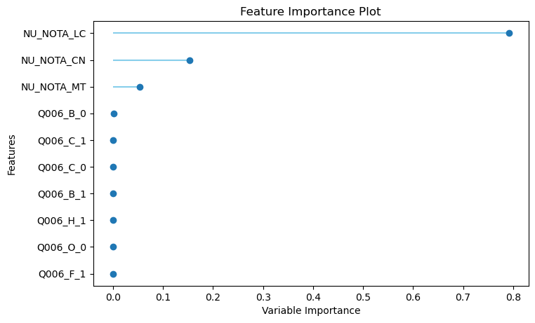
A nota em Linguagens e Códigos é a que mais influencia a nota de Ciências Humanas e de forma proporcional, ou seja, quanto maior a nota em Linguagens e Códigos, maior será a nota em Ciências Humanas. Isso também ocorre com as outras notas, porém, com menor grau de influência, como podemos analisar acima. Além disso, como transformamos a renda em uma variável Categórica para realizarmos nosso modelo de regressão, temos que os pontos estão com mesma importância! Faz sentido, né!? Afinal, apenas transformamos ela em várias colunas.
plot_model(gbr, plot='error')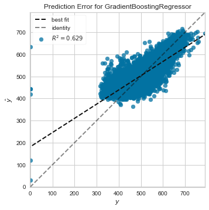
62,9% da variância de nossos dados podem ser explicados pelo modelo construído, enquanto os outros 37,1%, teoricamente, se tratariam de uma variância residual observando os dados de teste.
Como explicado acima, o R-quadrado é influenciado pelos resíduos, pelos valores previstos, entre outros. Quanto maior o R², melhor o modelo estará performando. Entretanto, é necessária a avaliação de outras métricas para que não haja um enviesamento em interpretar somente essa variável.
Para o gráfico a seguir, iremos analisar a variação dos resíduos e a distribuição deles. Para um modelo coerente, o ideal é que os modelos estejam normalmente distribuídos.
plot_model(gbr, plot='residuals')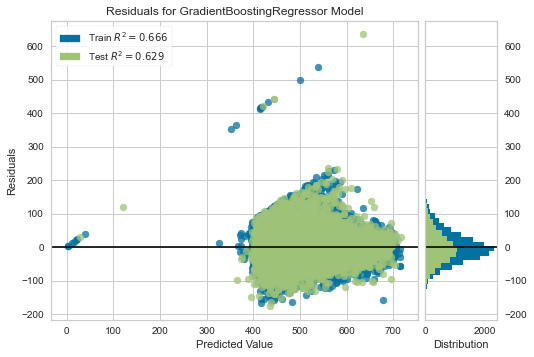
Como podemos conferir pelo gráfico acima, o nosso modelo GBR atende a algumas características da regressão linear, onde os resultados estão variados e normalmente distribuídos (pela Curva de Bell demonstrada na horizontal).
Criando uma Pipeline
Pensando em facilitar o uso em outros locais de nosso modelo já treinado, criaremos uma Pipeline. Mas afinal, o que é uma Pipeline?

Uma Machine Learning Pipeline é usada para ajudar a automatizar fluxos de trabalho de aprendizado de máquina. Elas operam permitindo que uma sequência de dados seja transformada e correlacionada em um modelo que pode ser testado e avaliado para atingir um resultado, seja ele positivo ou negativo de forma prática e ‘portátil’ e que pode ser utilizada fora deste Jupyter Notebook, por exemplo!
Fonte: https://medium.com/analytics-vidhya/what-is-a-pipeline-in-machine-learning-how-to-create-one-bda91d0ceaca#:~:text=A%20machine%20learning%20pipeline%20is,outcome%2C%20whether%20positive%20or%20negative.
Criando o arquivo da Pipeline
modelo_final = finalize_model(gbr)
save_model(modelo_final, 'modelo_gbr_nota_ch')Transformation Pipeline and Model Succesfully SavedImportando a Pipeline feita
loaded_model = load_model('modelo_gbr_nota_ch')Transformation Pipeline and Model Successfully LoadedRealizando uma predição com a pipeline criada
predictions = predict_model(loaded_model, data=validation)
predictions| NU_NOTA_CN | NU_NOTA_CH | NU_NOTA_LC | NU_NOTA_MT | Q006_A | Q006_B | Q006_C | Q006_D | Q006_E | Q006_F | ... | Q006_I | Q006_J | Q006_K | Q006_L | Q006_M | Q006_N | Q006_O | Q006_P | Q006_Q | Label | |
|---|---|---|---|---|---|---|---|---|---|---|---|---|---|---|---|---|---|---|---|---|---|
| index | |||||||||||||||||||||
| 1 | 514.3 | 497.6 | 525.6 | 479.7 | 0 | 0 | 1 | 0 | 0 | 0 | ... | 0 | 0 | 0 | 0 | 0 | 0 | 0 | 0 | 0 | 517.9173 |
| 2 | 441.1 | 422.3 | 498.3 | 401.0 | 0 | 1 | 0 | 0 | 0 | 0 | ... | 0 | 0 | 0 | 0 | 0 | 0 | 0 | 0 | 0 | 458.3118 |
| 3 | 384.0 | 480.4 | 447.5 | 487.1 | 1 | 0 | 0 | 0 | 0 | 0 | ... | 0 | 0 | 0 | 0 | 0 | 0 | 0 | 0 | 0 | 428.8950 |
| 4 | 384.1 | 438.7 | 487.3 | 429.3 | 0 | 1 | 0 | 0 | 0 | 0 | ... | 0 | 0 | 0 | 0 | 0 | 0 | 0 | 0 | 0 | 446.0202 |
| 5 | 391.2 | 470.3 | 469.4 | 530.6 | 0 | 0 | 0 | 1 | 0 | 0 | ... | 0 | 0 | 0 | 0 | 0 | 0 | 0 | 0 | 0 | 447.0818 |
| ... | ... | ... | ... | ... | ... | ... | ... | ... | ... | ... | ... | ... | ... | ... | ... | ... | ... | ... | ... | ... | ... |
| 25469 | 382.2 | 497.9 | 517.5 | 476.3 | 0 | 0 | 0 | 1 | 0 | 0 | ... | 0 | 0 | 0 | 0 | 0 | 0 | 0 | 0 | 0 | 471.0983 |
| 25470 | 490.8 | 530.9 | 564.7 | 373.5 | 0 | 0 | 0 | 0 | 1 | 0 | ... | 0 | 0 | 0 | 0 | 0 | 0 | 0 | 0 | 0 | 534.9952 |
| 25471 | 352.6 | 495.5 | 526.0 | 372.0 | 0 | 1 | 0 | 0 | 0 | 0 | ... | 0 | 0 | 0 | 0 | 0 | 0 | 0 | 0 | 0 | 470.1025 |
| 25472 | 468.3 | 556.0 | 533.8 | 529.8 | 0 | 0 | 0 | 0 | 1 | 0 | ... | 0 | 0 | 0 | 0 | 0 | 0 | 0 | 0 | 0 | 513.6461 |
| 25474 | 449.8 | 502.4 | 516.1 | 443.3 | 0 | 0 | 1 | 0 | 0 | 0 | ... | 0 | 0 | 0 | 0 | 0 | 0 | 0 | 0 | 0 | 481.1046 |
15965 rows × 22 columns
Calculando as métricas utilizadas
print('MAE {}'.format(mean_absolute_error(predictions['NU_NOTA_CH'], predictions['Label'])))
print('MSE {}'.format(mean_squared_error(predictions['NU_NOTA_CH'], predictions['Label'])))
print('RMSE {}'.format(sqrt(mean_squared_error(predictions['NU_NOTA_CH'], predictions['Label']))))
print('R2 {}'.format(r2_score(predictions['NU_NOTA_CH'], predictions['Label'])))
print('RMSLE {}'.format(rmsle(predictions['Label'],predictions['NU_NOTA_CH'])))
print('MAPE {}'.format(mape_vectorized_v2(predictions['NU_NOTA_CH'], predictions['Label'])))MAE 37.16508794237394
MSE 2313.972190365611
RMSE 48.103764825277565
R2 0.6544099959457227
RMSLE 0.15946730647667692
MAPE 0.07767887820456024Imprimindo os intervalos de confiança novamente para comparar as métricas
intervalosConfianca(dicionario_metricas_gbr)O intervalo de confiança (de 95%) para MAE é de 36.3702 até 37.5898
O intervalo de confiança (de 95%) para MSE é de 2250.4009 até 2435.5991
O intervalo de confiança (de 95%) para RMSE é de 47.4224 até 49.3376
O intervalo de confiança (de 95%) para R2 é de 0.6376 até 0.6608
O intervalo de confiança (de 95%) para RMSLE é de 0.1484 até 0.214
O intervalo de confiança (de 95%) para MAPE é de 0.0758 até 0.0784Nossos testes ficaram com TODAS as métricas dentro do Intervalo de Confiança de 95%! Aaaaah!

O nosso modelo Gradient Boosting Regressor É BOM! Com ele podemos prever uma nota que, em média, está a apenas 7,76%, vide valor da MAPE, distante da nota real.
Também concluimos que a nota de Linguagens e Códigos dos candidatos influencia DIRETAMENTE na nota de Ciências Humanas, comprovando a forte correlação entre Linguagens e Humanas.
Dividindo Dados para o Uso do scikit-learn
Iremos dividir as colunas que serão nossas features:
X_train:Para treino (features)X_test:Para teste (features)y_train:Para treino (target)y_test:Para teste (target)
X_train = dados_machine_learning.drop('NU_NOTA_CH', axis=1)
y_train = dados_machine_learning.NU_NOTA_CH
X_test = validation.drop('NU_NOTA_CH', axis=1)
y_test = validation.NU_NOTA_CHAnalisando o Modelo Ridge Regression (c/ Sklearn)
Construindo o Modelo e Analisando
A regularização de Tikhonov foi inventada de forma independente em muitos contextos diferentes. Tornou-se amplamente conhecido por sua aplicação a equações integrais do trabalho de Andrey Tikhonov e David L. Phillips. Alguns autores usam o termo regularização de Tikhonov-Phillips . O caso de dimensão finita foi exposto por Arthur E. Hoerl , que fez uma abordagem estatística, e por Manus Foster, que interpretou este método como um filtro de Wiener-Kolmogorov (Kriging). Seguindo Hoerl, é conhecido na literatura estatística como regressão de crista.
A regularização de Tikhonov , em homenagem a Andrey Tikhonov , é um método de regularização de problemas mal colocados . Um tipo particular de regularização de Tikhonov, conhecido como regressão de crista , é particularmente útil para mitigar o problema de multicolinearidade na regressão linear , que comumente ocorre em modelos com um grande número de parâmetros. Em geral, o método fornece eficiência aprimorada em problemas de estimativa de parâmetro em troca de uma quantidade tolerável de enviesamento (consulte compensação entre enviesamento e variância ).
Referências: https://en.wikipedia.org/wiki/Tikhonov_regularization
Com as bibliotecas necessárias já importadas, basta começar as análises!
Primeiro nós temos que descobrir um valor adequado de alpha para usarmos em nosso modelo:
cv = RepeatedKFold(n_splits=10, n_repeats=3, random_state=1)
model = RidgeCV(alphas = (0, 1, 0.01), cv=cv)
model.fit(X_train, y_train)
print('Melhor Alpha = {}'.format(model.alpha_))Melhor Alpha = 1.0Com os métodos definidos, realizamos, através de um for, as 10 camadas de cross-validation para obter os scores de cada métrica:
rr = Ridge(alpha=1.0)
for k, v in methods.items():
cv = RepeatedKFold(n_splits=10, n_repeats=1, random_state=1)
scores = cross_val_score(rr, X_train, y_train, scoring=v, cv=cv, n_jobs=-1)
scores = np.absolute(scores)
print('{0} >>> Média: {1:.4f}, Desvio-Padrão: {2:.4f}'.format(k, np.mean(scores), np.std(scores)))MAE >>> Média: 37.8779, Desvio-Padrão: 0.4421
MSE >>> Média: 2454.9977, Desvio-Padrão: 51.7236
RMSE >>> Média: 49.5452, Desvio-Padrão: 0.5188
R2 >>> Média: 0.6293, Desvio-Padrão: 0.0050
RMSLE >>> Média: 0.1913, Desvio-Padrão: 0.0213
MAPE >>> Média: 0.0791, Desvio-Padrão: 0.0011Com os métodos definidos, geramos os respectivos intervalos de confiança:
dicionario_metricas_ridge = {
'MAE': {'Média':37.8779, 'Desvio Padrão':0.4421},
'MSE': {'Média':2454.9977, 'Desvio Padrão':51.7236},
'RMSE': {'Média':49.5452, 'Desvio Padrão':0.5188},
'R2': {'Média':0.6293, 'Desvio Padrão':0.0050},
'RMSLE': {'Média': 0.1913, 'Desvio Padrão': 0.0213},
'MAPE': {'Média':0.0791, 'Desvio Padrão':0.0011}
}
intervalosConfianca(dicionario_metricas_ridge)O intervalo de confiança (de 95%) para MAE é de 37.6039 até 38.1519
O intervalo de confiança (de 95%) para MSE é de 2422.9391 até 2487.0563
O intervalo de confiança (de 95%) para RMSE é de 49.2236 até 49.8668
O intervalo de confiança (de 95%) para R2 é de 0.6262 até 0.6324
O intervalo de confiança (de 95%) para RMSLE é de 0.1781 até 0.2045
O intervalo de confiança (de 95%) para MAPE é de 0.0784 até 0.0798rr.fit(X_train, y_train)
y_pred = rr.predict(X_test)bCalculando as métricas utilizadas
print('MAE {}'.format(mean_absolute_error(y_test, y_pred)))
print('MSE {}'.format(mean_squared_error(y_test, y_pred)))
print('RMSE {}'.format(sqrt(mean_squared_error(y_test, y_pred))))
print('R2 {}'.format(r2_score(y_test, y_pred)))
print('RMSLE {}'.format(rmsle(y_test, y_pred)))
print('MAPE {}'.format(mape_vectorized_v2(y_test, y_pred)))MAE 37.74545557040428
MSE 2393.8580194828
RMSE 48.92706837204535
R2 0.6424791075264775
RMSLE 0.171419077652824
MAPE 0.07900497582198783Para os gráficos a seguir, iremos analisar a variação dos resíduos e a distribuição deles. Porém como é possível perceber abaixo, ainda existiram algumas notas 0 (provenientes de pessoas que entregaram a prova em branco ou zeraram totalmente).
Para um modelo coerente, o ideal é que os modelos estejam normalmente distribuídos.
m, b = np.polyfit(y_test, y_pred, 1)
plt.figure(figsize=(7,6))
plt.plot(y_test, y_pred, 'o')
plt.plot(y_test, b+ m*y_test,color='r')
plt.scatter(y_test, y_pred); # dados
plt.title('Prediction Error for Linear Regression')
plt.xlabel("y")
plt.ylabel('$\hat{y}$')
plt.grid()
plt.legend(('R² = 0.642','Modelo'));residuos=y_test-y_pred
fig = plt.figure(figsize=(7,5))
plt.scatter(y_pred,residuos);
plt.axhline(y=0, color='r', linestyle='-');
plt.ylabel('e: Resíduos')
plt.xlabel('$\hat{y}$: Valores Preditos')
plt.title('Residuals for Ridge Regression Model')
plt.grid()
plt.show()Geramos o probplot dos resíduos para verificar a sua normalidade.
fig = plt.figure(figsize=(5,5))
stats.probplot(residuos,dist='norm', plot=plt);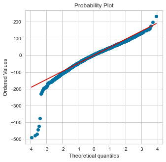
Analisando o Modelo (RAIZ) Linear Regression (c/ Scikit)
Construindo o Modelo e Analisando
Em estatística , a regressão linear simples é um modelo de regressão linear com uma única variável explicativa. Ou seja, trata-se bidimensionais pontos de amostra com uma variável independente e uma variável dependente (convencionalmente, a x e y coordenadas de um sistema de coordenadas cartesianas ) e encontra um função linear (uma linha reta não vertical ) que, com a maior precisão possível, prevê os valores da variável dependente como uma função da variável independente. O adjetivo simplesrefere-se ao fato de que a variável de resultado está relacionada a um único preditor.
É comum fazer a estipulação adicional de que o método dos mínimos quadrados ordinários (OLS) deve ser usado: a precisão de cada valor predito é medida por seu resíduo quadrado (distância vertical entre o ponto do conjunto de dados e a linha ajustada), e o objetivo é tornar a soma desses desvios quadrados o menor possível. Outros métodos de regressão que podem ser usados no lugar dos mínimos quadrados ordinários incluem os menores desvios absolutos (minimizando a soma dos valores absolutos dos resíduos) e o estimador de Theil-Sen (que escolhe uma linha cuja inclinação é a mediana das inclinações determinadas por pares de pontos de amostragem). Regressão de Deming(total de mínimos quadrados) também encontra uma linha que se ajusta a um conjunto de pontos de amostra bidimensionais, mas (ao contrário de mínimos quadrados ordinários, mínimos desvios absolutos e regressão de inclinação mediana) não é realmente uma instância de regressão linear simples, porque não separar as coordenadas em uma variável dependente e uma variável independente e poderia potencialmente retornar uma linha vertical como seu ajuste.
O restante do artigo assume uma regressão de mínimos quadrados ordinários. Nesse caso, a inclinação da linha ajustada é igual à correlação entre y e x corrigida pela razão dos desvios padrão dessas variáveis. A interceptação da linha ajustada é tal que a linha passa pelo centro de massa ( x , y ) dos pontos de dados.
Referências: https://en.wikipedia.org/wiki/Simple_linear_regression
Com os métodos definidos, realizamos, através de um for, as 10 camadas de cross-validation para obter os scores de cada métrica:
lr = LinearRegression()
for k, v in methods.items():
cv = RepeatedKFold(n_splits=10, n_repeats=1, random_state=1)
scores = cross_val_score(lr, X_train, y_train, scoring=v, cv=cv, n_jobs=-1)
scores = np.absolute(scores)
print('{0} --> Média: {1:.4f}, Desvio Padrão: {2:.4f}'.format(k, np.mean(scores), np.std(scores)))MAE --> Média: 37.8780, Desvio Padrão: 0.4421
MSE --> Média: 2454.9983, Desvio Padrão: 51.7236
RMSE --> Média: 49.5452, Desvio Padrão: 0.5188
R2 --> Média: 0.6293, Desvio Padrão: 0.0050
RMSLE --> Média: 0.1913, Desvio Padrão: 0.0213
MAPE --> Média: 0.0791, Desvio Padrão: 0.0011Com os metodos definidos, geramos os respectivos intervalos de confiança:
dicionario_metricas_lr = {
'MAE': {'Média': 37.8780, 'Desvio Padrão': 0.4421},
'MSE': {'Média': 2454.9983, 'Desvio Padrão': 51.7236},
'RMSE': {'Média': 49.5452, 'Desvio Padrão': 0.5188},
'R2': {'Média': 0.6293, 'Desvio Padrão': 0.0050},
'RMSLE': {'Média': 0.1913, 'Desvio Padrão': 0.0213},
'MAPE': {'Média': 0.0791, 'Desvio Padrão': 0.0011}
}
intervalosConfianca(dicionario_metricas_lr)O intervalo de confiança (de 95%) para MAE é de 37.604 até 38.152
O intervalo de confiança (de 95%) para MSE é de 2422.9397 até 2487.0569
O intervalo de confiança (de 95%) para RMSE é de 49.2236 até 49.8668
O intervalo de confiança (de 95%) para R2 é de 0.6262 até 0.6324
O intervalo de confiança (de 95%) para RMSLE é de 0.1781 até 0.2045
O intervalo de confiança (de 95%) para MAPE é de 0.0784 até 0.0798lr.fit(X_train, y_train)
y_pred = lr.predict(X_test)Calculando as métricas utilizadas
print('MAE {}'.format(mean_absolute_error(y_test, y_pred)))
print('MSE {}'.format(mean_squared_error(y_test, y_pred)))
print('RMSE {}'.format(sqrt(mean_squared_error(y_test, y_pred))))
print('R2 {}'.format(r2_score(y_test, y_pred)))
print('RMSLE {}'.format(rmsle(y_test, y_pred)))
print('MAPE {}'.format(mape_vectorized_v2(y_test, y_pred)))MAE 37.74552997732939
MSE 2393.862880966195
RMSE 48.927118052938646
R2 0.6424783814675934
RMSLE 0.17141916824479306
MAPE 0.07900509912956889Após as análises acima, plotamos novamente gráficos de resíduos e sua distribuição, que possui algumas notas que poderiam comprometer a análise, mas com a utilização do PyCaret, foi possível perceber que esse também é um modelo fiel, o qual poderemos analisar e tirar conclusões pertinentes.
m, b = np.polyfit(y_test, y_pred, 1)
plt.figure(figsize=(7,6))
plt.plot(y_test, y_pred, 'o')
plt.plot(y_test, b+ m*y_test,color='r')
plt.scatter(y_test, y_pred); # dados
plt.title('Prediction Error for Linear Regression')
plt.xlabel("y")
plt.ylabel('$\hat{y}$')
plt.grid()
plt.legend(('R² = 0.642','Modelo'));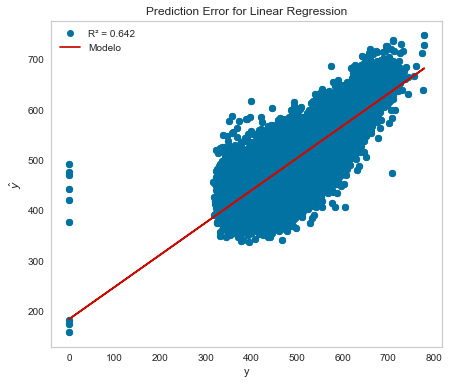
residuos=y_test-y_pred
fig = plt.figure(figsize=(7,5))
plt.scatter(y_pred,residuos);
plt.axhline(y=0, color='r', linestyle='-');
plt.ylabel('e: Resíduos')
plt.xlabel('$\hat{y}$: Valores Preditos')
plt.title('Residuals for Linear Regression Model')
plt.grid()
plt.show()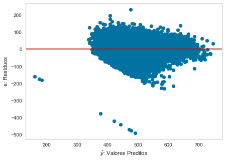
Geramos o probplot dos resíduos para verificar a sua normalidade.
fig = plt.figure(figsize=(5,5))
stats.probplot(residuos,dist='norm', plot=plt);Conclusões Finais
E foi isso! 3 modelos que se comportaram de forma MUITO PARECIDA! O Gradient Boosting regression foi o modelo que melhor se desempenhou, mas olhando por um prisma estatístico, vemos que os 3 estão MUITO BONS! E não é só porque nós fizemos, mas os números comprovaram! Todos os modelos ficaram dentro dos Intervalos de Confiança de 95% e pudemos ver a precisão dos modelos.
Bem, mas agora você se pergunta: Porque isso foi importante?
Vimos que as notas possuem alta correlação e olha só o que podemos concluir:
Quanto maior a nota de Linguagens e Códigos, há uma tendência de melhor performance do candidato em Ciências Humanas, logo, se houvesse um maior investimento, por exemplo, na educação em Linguagens e Códigos, as áreas de Humanas TAMBÉM seriam afetadas. E faz sentido visto que, quanto maior a capacidade de interpretação e compreensão, melhor o aproveitamento das matérias de humanas.
Nosso País é desigual. E vimos isso pelo impacto que a Renda gera sobre as notas.
As oportunidades, no passado, pelos pais em relação à escolaridade influenciam os filhos que prestarão ENEM.
IDH é um indicador relevante, porém não deve ser diretamente interpretado, uma vez que sua correlação com o desempenho final do candidato é moderada, vide nossos levantamentos.
Portanto, apesar de não termos explorado TODO o Dataset, podemos ver o quão incrível são os resultados que obtivemos com ‘apenas’ estes dados e o que podemos fazer com eles para melhorar, literalmente, o futuro. E isso é Data Science!

É isto! Gostaríamos de agradecer se você chegou até aqui!
Referências Bibliográficas
Além de todas as fontes que colocamos durante as explicações, gostaríamos de agradecer pelas aulas do 2° Semestre de Ciências dos Dados e por todos os slides de aula da professora Maria Kelly Venezuela.
Algumas fontes extras que utilizamos e ainda não tinhamos mencionado:
Estudo do Nicolas sobre Ridge Regression: Repositório do GitHub
Vídeos sobre Gradient Boosting Regression: https://www.youtube.com/watch?v=3CC4N4z3GJc
Obrigado ao Stack Overflow por existir e pelos diversos artigos citados anteriormente que estão no Medium.